WikiSkill
ทั้งเรื่องในภาพเดียว: ไม่มีคนเขียนสกิล ได้ 97.9% · คนตอบคำถาม 4 ข้อ ได้ 100.0%
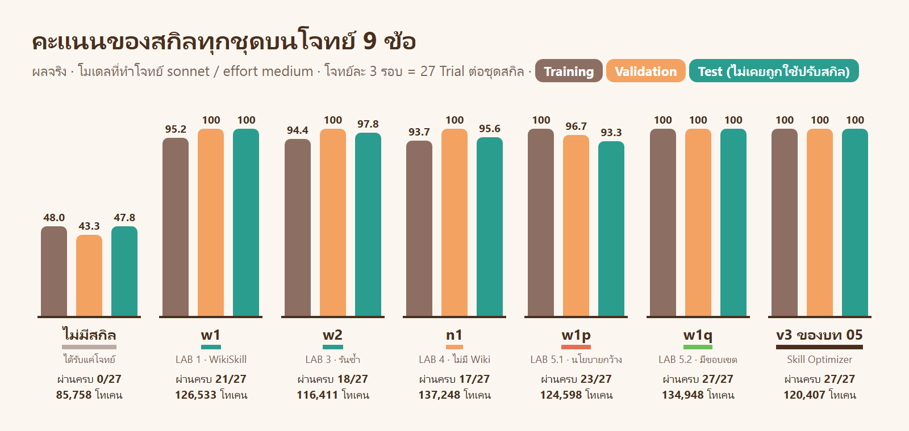
ผลจริงจาก 279 Trial · w1 = สกิลที่ WikiSkill สร้างเองจากชุดสกิลว่าง · w1q = w1 + นโยบายธุรกิจที่ทีมตอบ · ที่มาของแต่ละแท่งอยู่ในภาค LAB
WikiSkill ใน 4 ขั้น: ทำโจทย์ → จดลงสมุดความรู้ → เขียนสกิลจากสมุด → วัดแล้วตัดสิน
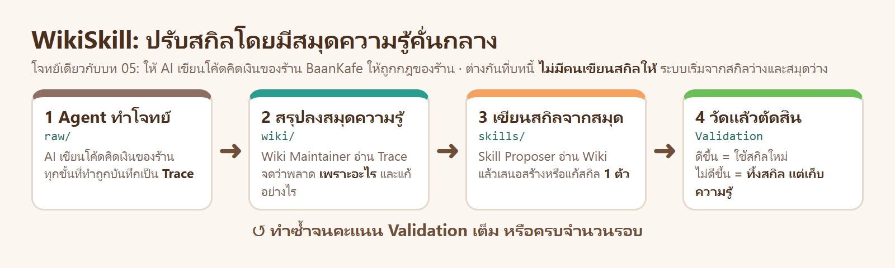
ต่างจากบท 05 ที่จุดเดียว: ไม่มีคนเขียนสกิล ระบบเริ่มจากชุดสกิลว่างและสมุดว่าง
สกิลที่ไม่ผ่านถูกทิ้ง แต่สิ่งที่จดลงสมุดความรู้ยังอยู่ · ทำซ้ำจนคะแนน Validation เต็ม หรือครบจำนวนรอบ
บทนี้แบ่งเป็น 2 ภาค 4 ส่วน
01_theory/README.md · รายละเอียดเต็มของทุกหัวข้ออยู่ใน README.mdวิธีใช้สไลด์นี้
ไปหน้าถัดไป / ก่อนหน้า
→ Space / ← หรือปุ่มมุมขวาล่าง
สารบัญทุกหน้า
O แล้วคลิกหน้าที่ต้องการ · F เต็มจอ
ขยายภาพ
คลิกที่ภาพ · คลิกอีกครั้งหรือ Esc เพื่อปิด
คัดลอกพรอมต์ของ LAB
ปุ่ม คัดลอกพรอมต์ทั้งหมด ให้ข้อความเดียวกับ README.md ตรงตัวอักษร แม้พรอมต์ถูกแบ่งแสดง 2 หน้า
ตรวจผลหลังรัน
สไลด์ ตรวจผลของคุณ ต่อจากพรอมต์ทุก LAB · ติ๊กได้ และจำค่าไว้ในเบราว์เซอร์นี้
เปิดไฟล์จริง
ลิงก์สีน้ำเงินเปิดไฟล์ในโฟลเดอร์ของบท · เปิดสไลด์จากโฟลเดอร์ 06_WikiSkill
โจทย์ (ฉบับย่อ) และ WikiSkill
ภาคนี้อ่านอย่างเดียว ไม่ต้องรันอะไร และไม่ใช้โทเคน
- ส่วนที่ 1 ทบทวนโจทย์ของบท 05 สั้น ๆ · ส่วนที่ 2 อธิบาย WikiSkill
- ตัวเลขที่กำกับว่า "ตัวอย่างจากผล LAB" ยกมาจากการรันจริงใน ภาค LAB เพื่อประกอบคำอธิบายเท่านั้น
โจทย์ (ฉบับย่อ)
โจทย์เดิมของบท 05 คืออะไร · บทนี้เปลี่ยนอะไร
โจทย์เดิมของบท 05: Agent ไม่ได้รับความรู้แฝงของทีม แต่ตัวตรวจรู้ครบ
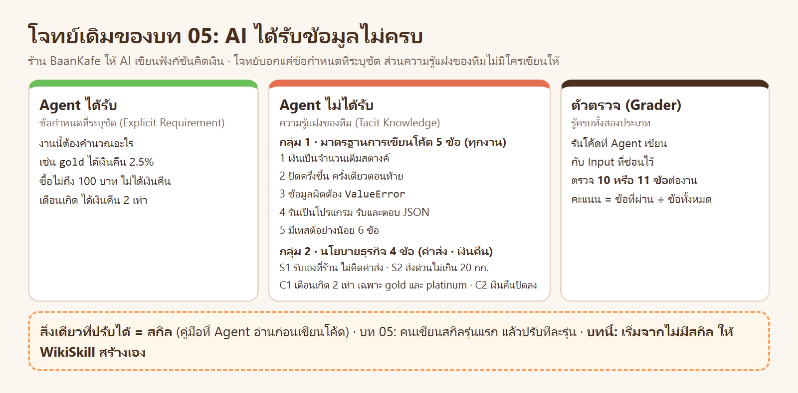
บทนี้ใช้ โจทย์ ตัวตรวจ และกติกาชุดเดียวกับบท 05 จึงทบทวนแค่ภาพเดียว · คำอธิบายเต็มอยู่ที่ บท 05 ส่วนที่ 1
สิ่งที่บทนี้เปลี่ยนจากบท 05
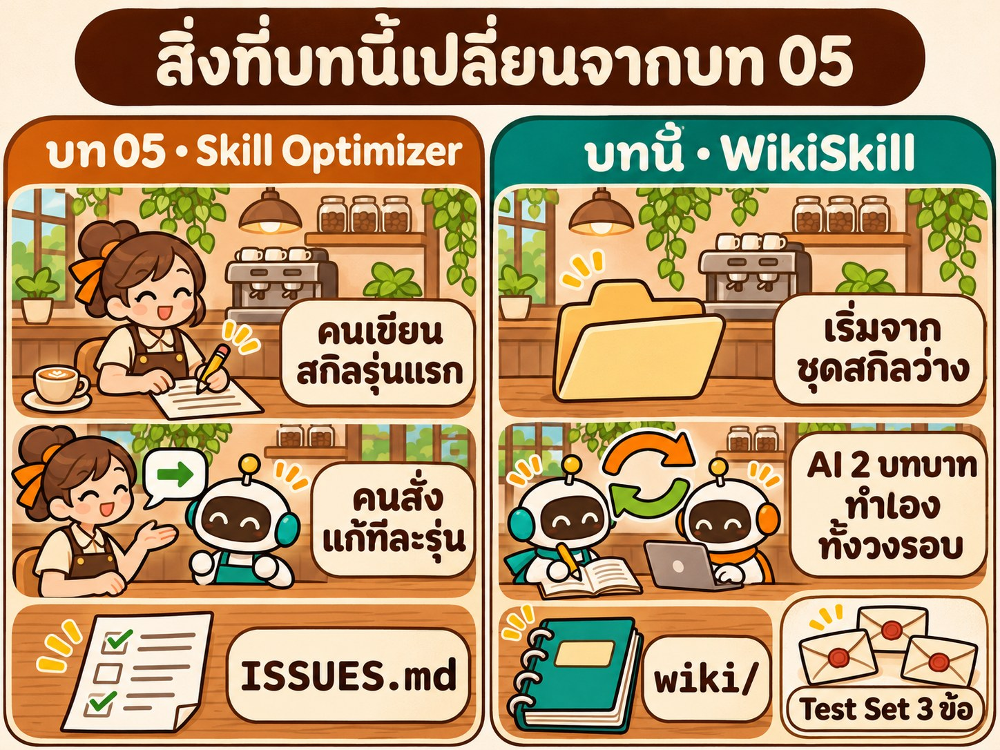
v0) · บทนี้ ไม่มี เริ่มจากชุดสกิลว่างISSUES.md → สมุดความรู้ wiki/Test Set 3 ข้อ: โจทย์ที่ไม่เคยถูกใช้ปรับสกิลทั้งสองวิธีsuite/suite.json
x1-late-fee
late_fee(amount, days_late)
ค่าปรับจ่ายช้า วันละ 0.75% · 3 วันแรกไม่คิด · สูงสุด 15%
x2-refund
refund(paid, used_percent, restock)
คืนเงินคอร์สตามส่วนที่ยังไม่เรียน · เรียนเกิน 80% ไม่คืน · หักค่าดำเนินการ 12.5%
x3-bulk-price
bulk_price(unit_price, qty, coupon)
ราคาขายส่ง ลด 3.5% หรือ 7.5% ตามจำนวน · คูปองลดอีก 2.5% · VAT 7%
suite/suite.jsonWikiSkill
WikiSkill คืออะไร · ทำงานอย่างไร · นำมาใช้กับโจทย์นี้อย่างไร
สกิลเป็นเพียงฉบับย่อของความรู้ ณ ขณะหนึ่ง เหตุผล หลักฐาน และสิ่งที่เคยลองแล้วไม่ได้ผล ต้องมีที่อยู่ของตัวเอง
ปัญหา: ความรู้ของแต่ละรอบหายไป
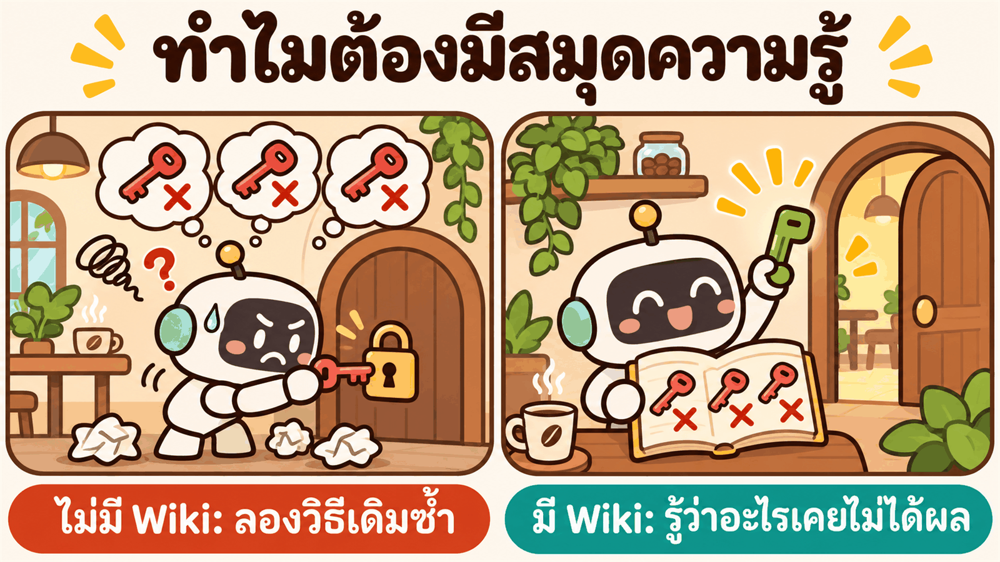
แนวคิด: มีสมุดความรู้คั่นกลาง

สถาปัตยกรรม 3 ชั้น: สกิลย้อนกลับได้ แต่ Wiki มีแต่เพิ่ม
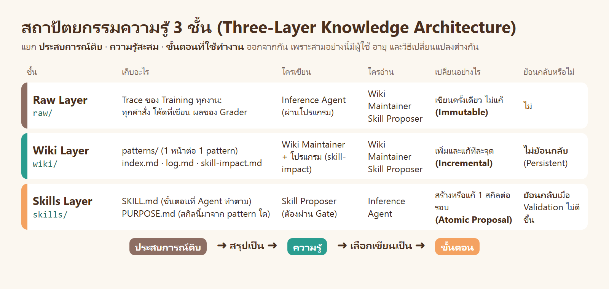
Raw Layer raw/ คงอยู่ · ไม่มีใครแก้ · Wiki Layer wiki/ คงอยู่ · มีแต่เพิ่ม · Skills Layer skills/ ย้อนกลับ ไปชุดเดิม
ส่วนประกอบ 4 ตัว และสิทธิ์ต่อแต่ละชั้น

แต่ละส่วนประกอบอ่านและเขียนได้เฉพาะบางชั้น · Inference Agent อ่านได้แค่ Skills Layer
ใครทำอะไร: ส่วนประกอบ 4 ตัว

หนึ่งรอบของ WikiSkill ด้วยตัวเลขจริง

ตัวเลขในภาพคือ ตัวอย่างจากผล LAB (รอบที่ 1 ของ LAB 1)
Algorithm 1 ทีละบรรทัด

เครื่องมือ wikiskill ที่สร้างใน LAB 0 ทำตามอัลกอริทึมนี้ทุกบรรทัด · คำสั่งของแต่ละบรรทัดอยู่ใน wikiskill_format.md
กติกา 3 ข้อที่ทำให้ WikiSkill ต่างจากวงรอบทั่วไป
1จดความรู้ลง Wiki ก่อน เสนอแก้สกิล
ความรู้ของรอบนี้เข้า Wiki ไปแล้ว ไม่ว่าข้อเสนอจะผ่านหรือไม่
2สกิลที่ไม่ผ่านถูกย้อนกลับ แต่ Wiki ไม่ย้อนกลับ
สกิลที่แย่ลงเป็นอันตรายต่อการใช้งาน · "วิธีนี้ลองแล้วไม่ได้ผล" เป็นความรู้ชิ้นใหม่
3Agent ที่ทำโจทย์ ไม่เห็น Wiki
ถ้า Agent ทำถูกเพราะ Wiki จะไม่มีอะไรบอกว่าสกิลยังขาดกฎข้อใด
กติกาข้อ 1–2: สกิลย้อนกลับได้ แต่ความรู้ไม่หาย
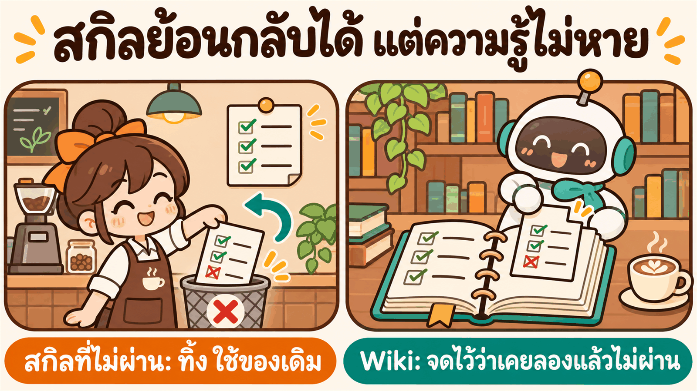
สกิลที่ไม่ผ่านถูกทิ้ง ใช้ของเดิม · Wiki จดไว้ว่าเคยลองแล้วไม่ผ่าน
กติกาข้อ 3: คนทำงานอ่านแค่คู่มือ
Agent อ่านเฉพาะสกิล · Wiki อยู่หลังร้าน Agent ไม่เห็น
จากเปเปอร์ มาสู่โจทย์ของบทนี้
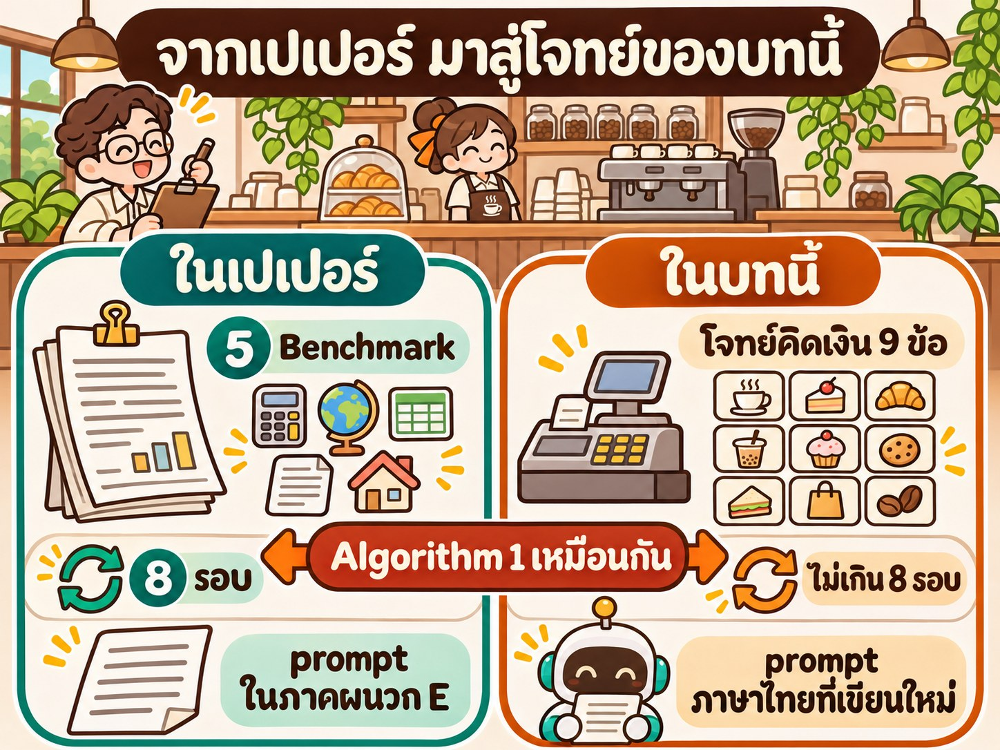
run ของ skill-optimizer ที่สร้างในบท 05 · สกิลวางใน ./skills ให้ Agent เปิดอ่านเองจุดที่บทนี้เพิ่มจากเปเปอร์ คือคำถามหลักของภาค LAB
นโยบายธุรกิจ มีใน Training 2 ข้อ
แต่ ไม่มีใน Validation
ความรู้แฝงเฉพาะงาน (นโยบายธุรกิจ) · ในเปเปอร์: ไม่มี · ในบทนี้: มีใน Training 2 ข้อ แต่ ไม่มีใน Validation
แถวสุดท้ายคือจุดที่บทนี้เพิ่มจากเปเปอร์ และเป็นคำถามหลักของภาค LAB
คำถาม 5 ข้อที่ภาค LAB จะตอบ
1LAB 1 · 2
เริ่มจากไม่มีสกิล WikiSkill ค้นพบมาตรฐานการเขียนโค้ด 5 ข้อเองได้หรือไม่
2LAB 2
นโยบายธุรกิจ 4 ข้อที่ไม่มีใครบอก WikiSkill ค้นพบได้หรือไม่
3LAB 3
รันซ้ำแล้วได้ผลเดิมหรือไม่
4LAB 4
ถ้าตัด Wiki ออก ผลต่างกันอย่างไร
5LAB 5
ความรู้ที่ WikiSkill หาเองไม่ได้ เติมอย่างไร
ลงมือทำ 6 ขั้น และสรุปผล
ภาคนี้ลงมือทำ: คัดลอกพรอมต์ → วางใน Claude Code → อ่านผล
ผลจริงทุกตัวในภาคนี้มาจากการรันเมื่อ 14 พ.ย. 2026 · โมเดล sonnet · effort medium · ผลดิบอยู่ใน runs/
ภาค LAB: ลงมือทำ 6 ขั้น
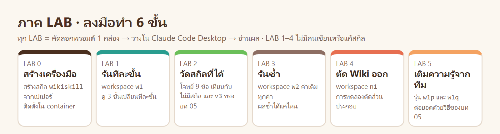
LAB 0 สร้างเครื่องมือ · LAB 1 รันทีละขั้น · LAB 2 วัดสกิลที่ได้ · LAB 3 รันซ้ำ · LAB 4 ตัด Wiki ออก · LAB 5 เติมความรู้จากทีม
ก่อนเริ่ม LAB
วิธีใช้
เปิดโฟลเดอร์ Teaching ใน Claude Code Desktop → คัดลอกกล่อง IMPORTANT → วาง → รอผล
ต้องมี
container multi-account · บัญชี yolo ที่ล็อกอินแล้วอย่างน้อย 1 บัญชี · สกิล skill-optimizer ที่สร้างใน บท 05 LAB 0
ผลจริงในสไลด์
ผลจริงทุกตัวในภาคนี้มาจากการรันเมื่อ 14 พ.ย. 2026 · โมเดล sonnet · effort medium · ผลดิบอยู่ใน runs/
แผนการทดลอง
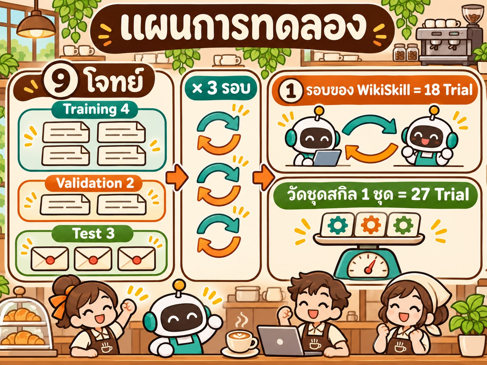
suite/suite.json · 6 ข้อแรกและตัวตรวจเป็นชุดเดียวกับบท 05solve.py และ test_solve.py · คะแนน = สัดส่วนข้อตรวจที่ผ่านsonnet effort medium · Wiki Maintainer และ Skill Proposer: sonnet effort highโครงสร้างโฟลเดอร์: 1 การรัน WikiSkill = 1 workspace = 1 โฟลเดอร์
06_WikiSkill/
├── README.md บทเรียนนี้
├── WikiSkill_Slides.html สไลด์ของบทนี้ (สร้างด้วย tools/build_slides.py)
├── wikiskill_format.md รูปแบบที่เครื่องมือ wikiskill ต้องทำตาม
├── suite/ ของที่ป้อนเข้า: โจทย์ 9 ข้อ (suite.json) และตัวตรวจ (grade.py)
├── runs/ ผลลัพธ์
│ ├── w1/ workspace ของ WikiSkill (LAB 1) · w2 (LAB 3) และ n1 (LAB 4) โครงเดียวกัน
│ │ ├── raw/iter-NN/ Raw Layer: Trace ของ Training ทุกรอบ
│ │ ├── wiki/ Wiki Layer: index.md · log.md · skill-impact.md · patterns/
│ │ ├── skills/ Skills Layer: สกิลที่ใช้งานเมื่อจบ
│ │ ├── history/iter-NN/ สิ่งที่แต่ละบทบาทได้รับและตอบในรอบนั้น
│ │ ├── rollouts/ Trial ที่วงรอบรัน (k00-val · k01-train · k01-val …)
│ │ ├── trials/ Trial ที่วัดสกิลตอนจบ 27 Trial (LAB 2)
│ │ └── state.json status.txt
│ ├── noskill/ so-v3/ w1p/ ชุดสกิลที่ใช้เทียบ: skills/ และ trials/
│ └── report.md results.json ตารางเทียบทุกชุด
├── tools/ สคริปต์วาดกราฟและแผนภาพจาก runs/
└── 01_theory/ ทฤษฎีจากเปเปอร์ WikiSkillruns/<workspace>/skills/ เท่านั้น ห้ามเป็น global skill · ที่ทำงานใน container คือ /workspace/wklab/เตรียมเครื่องมือและโจทย์
สร้างเครื่องมือ wikiskill แล้วติดตั้งใน container พร้อมโจทย์
ขั้น 0.1 · สร้างสกิล wikiskill ใน 6 ขั้น
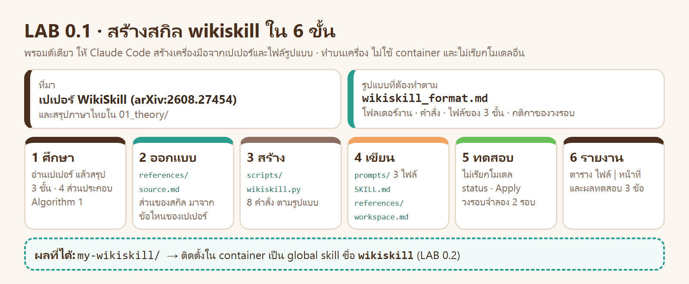
ทำบนเครื่อง ไม่ใช้ container · ที่มา: เปเปอร์ WikiSkill · รูปแบบ: wikiskill_format.md
พรอมต์ · ขั้น 0.1 · สร้างสกิล wikiskillCopy & Paste
งาน: สร้างสกิล wikiskill ไว้ในโฟลเดอร์ใหม่ ./my-wikiskill (ทำบนเครื่องนี้ ไม่ใช้ container)
ที่มา : เปเปอร์ WikiSkill (arXiv:2608.27454) · สรุปภาษาไทย 03_week03/06_WikiSkill/01_theory/README.md
รูปแบบ : 03_week03/06_WikiSkill/wikiskill_format.md
เงื่อนไข : ห้ามเปิดฉบับสำเร็จที่ 00_resource/skills/wikiskill · prompt ต้องเขียนด้วยถ้อยคำของตัวเอง
ทำตามลำดับ:
1. ศึกษา อ่านที่มา แล้วสรุปวงรอบของ WikiSkill: 3 ชั้น 4 ส่วนประกอบ และ Algorithm 1
2. ออกแบบ จด references/source.md: ส่วนของสกิล | มาจากข้อไหนของเปเปอร์ | เหมือนหรือต่าง
3. สร้าง scripts/wikiskill.py 8 คำสั่ง (init baseline rollout maintain propose gate loop status) ตามรูปแบบ
4. เขียน prompts/ 3 ไฟล์ (maintainer proposer proposer_nowiki) · SKILL.md · references/workspace.md
5. ทดสอบ ไม่เรียกโมเดล: (ก) status ของทุก workspace ใน 03_week03/06_WikiSkill/runs ต้องพิมพ์ตรงกับ status.txt (ข) นำ history/iter-NN/proposal.json ที่เก็บไว้มา Apply ใหม่ ต้องได้ candidate/skills และ proposal.diff เหมือนที่เก็บไว้ (ค) รันวงรอบ 2 รอบด้วย Agent จำลอง ให้ได้ ACCEPTED 1 รอบ และ REJECTED 1 รอบ แล้วตรวจว่ารอบที่ถูกปฏิเสธ skills คงเดิมแต่ wiki ยังอยู่ครบ
6. รายงาน ตาราง ไฟล์ | หน้าที่ และผลทดสอบ 3 ข้อตรวจผลของคุณ · ขั้น 0.1 · สร้างสกิล wikiskillChecklist
scripts/wikiskill.py 1,144 บรรทัด) · ทดสอบผ่านทั้ง 3 ข้อwikiskill_format.md · การเรียกโมเดลจริงยังไม่ได้ทดสอบในขั้นนี้ (รู้ผลใน LAB 1)ผลจริงขั้น 0.1: ได้เครื่องมือ 7 ไฟล์ผลของผู้สอน
SKILL.md
73 บรรทัด · คู่มือที่ AI อ่าน: ใช้เมื่อไร · ตารางคำสั่ง 8 ตัว · ขั้นตอน · ข้อห้าม
scripts/wikiskill.py
1,144 บรรทัด · โปรแกรมของวงรอบ ไฟล์เดียว ใช้ไลบรารีมาตรฐานเท่านั้น
prompts/maintainer.md
79 บรรทัด · system prompt ของ Wiki Maintainer: วิธีอ่าน Trace · โครงหน้า pattern · กติกาของ index
prompts/proposer.md
73 บรรทัด · system prompt ของ Skill Proposer: ลำดับการทำงาน · รูปแบบข้อเสนอ · กติกา
prompts/proposer_nowiki.md
73 บรรทัด · system prompt ของ Skill Proposer เมื่อไม่ใช้ wiki (LAB 4)
references/source.md
63 บรรทัด · สรุปวงรอบ และตารางตรวจย้อนกลับ 20 แถว
references/workspace.md
100 บรรทัด · โครง workspace และไฟล์ที่แต่ละคำสั่งอ่านและเขียน
ผลจริงขั้น 0.1: ทดสอบ 3 ข้อโดยไม่เรียกโมเดลผลของผู้สอน
(ก) status ของ workspace ที่เก็บไว้
✅ พิมพ์ตรงกับ status.txt ทุกตัวอักษร
(ข) Apply proposal.json ที่เก็บไว้ใหม่
✅ SKILL.md PURPOSE.md และ proposal.diff ตรงกันทุกไบต์ ทั้งข้อเสนอแบบ create และ patch
(ค) วงรอบจำลอง 2 รอบ
✅ รอบ 1 ACCEPTED · รอบ 2 REJECTED: skills/ กลับเป็นชุดของรอบ 1 · หน้า pattern ที่จดในรอบ 2 ยังอยู่ · skill-impact.md มีทั้ง 2 รายการพร้อม diff
การเรียกโมเดลจริง
⚠️ ยังไม่ได้ทดสอบในขั้นนี้ (รู้ผลใน LAB 1)
ขั้น 0.2 ทำอะไร
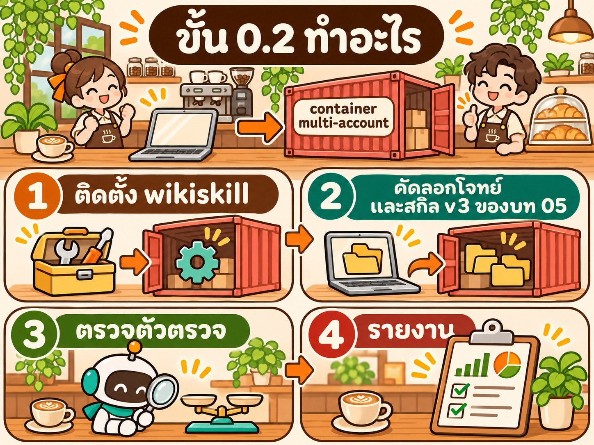
my-wikiskill เป็น global skill ชื่อ wikiskill ของบัญชี yolo (ไว้ข้างสกิล skill-optimizer ของบท 05)suite ไปไว้ที่ /workspace/wklab/suite · สกิล v3 ของบท 05 ไปไว้ที่ /workspace/wklab/runs/so-v3/skillsskill-optimizer อยู่แล้วหรือไม่ · ตัวตรวจด้วย suite/check_grader.py · บัญชี yolo1–yolo5 ตัวไหนล็อกอินแล้วขั้น 0.2 · ไฟล์เข้าและออก
wikiskill ของทุกบัญชี yolo/workspace/wklab/suite//workspace/wklab/runs/so-v3/skills/พรอมต์ · ขั้น 0.2 · ติดตั้งเครื่องมือ และตรวจตัวตรวจCopy & Paste
งาน: เตรียม container multi-account ให้พร้อมสำหรับ LAB 1–5 (ยังไม่วัดอะไร)
ทำตามลำดับ:
1. ติดตั้ง my-wikiskill เป็น global skill ชื่อ wikiskill ของบัญชี yolo (ไว้ข้างสกิล skill-optimizer ของบท 05)
2. คัดลอก suite ของ 03_week03/06_WikiSkill ไปไว้ที่ /workspace/wklab/suite · สกิล v3 ของบท 05 (03_week03/05_Skill_Optimizer/runs/v3/skills) ไปไว้ที่ /workspace/wklab/runs/so-v3/skills
3. ตรวจ มีสกิล skill-optimizer อยู่แล้วหรือไม่ · ตัวตรวจด้วย suite/check_grader.py · บัญชี yolo1–yolo5 ตัวไหนล็อกอินแล้ว
4. รายงาน ตาราง รายการ | ผลตรวจผลของคุณ · ขั้น 0.2 · ติดตั้งเครื่องมือ และตรวจตัวตรวจChecklist
skill-optimizer อยู่แล้ว ✅ · ตัวตรวจผ่าน ✅ · บัญชีที่ใช้ได้ yolo1 yolo2 yolo3 · ใช้ 1 นาทีรัน WikiSkill ทีละขั้น (w1)
รัน WikiSkill ทีละขั้น จากชุดสกิลว่าง (w1)
w1)LAB 1 ทำอะไร
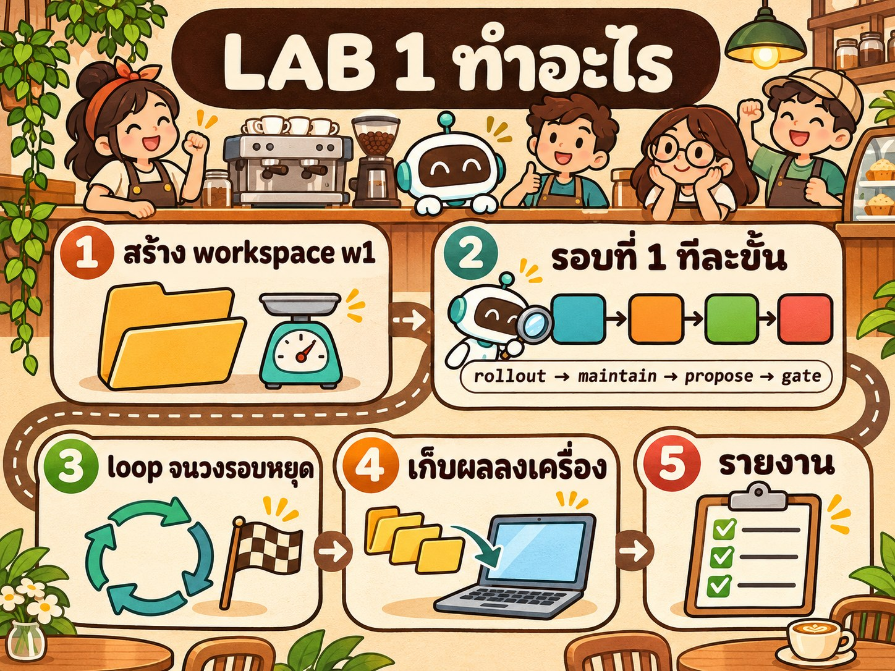
w1 (ชุดสกิลว่าง · wiki ว่าง) แล้ววัด baselinerollout → maintain → propose → gate · หลังแต่ละขั้นเปิดไฟล์ที่ขั้นนั้นสร้าง ดูว่าชั้นใด (raw / wiki / skills) เปลี่ยนอย่างไรloop จนวงรอบหยุด (R_best = 100% หรือครบ 8 รอบ) แล้วบันทึกผลของ statusruns/w1 จาก container มาไว้บนเครื่อง · ไม่เก็บ Trace ดิบ · Validation Set เก็บแค่คะแนนและต้นทุนwiki/index.md · ชื่อสกิลที่ได้ · เหตุผลที่วงรอบหยุดw1)LAB 1 · รัน WikiSkill ทีละขั้น · ไฟล์เข้าและออก
suite/suite.json โจทย์ Training 4 ข้อ และ Validation 2 ข้อsuite/grade.py ตัวตรวจwikiskill (จาก LAB 0)runs/w1/raw/ Trace ของ Training ทุกรอบruns/w1/skills/ สกิลที่วงรอบสร้างruns/w1/status.txt ตารางของทุกรอบ · history/ หลักฐานของแต่ละรอบw1)พรอมต์ · LAB 1 · รัน WikiSkill ทีละขั้นCopy & Paste
งาน: รัน WikiSkill ทีละขั้น · เริ่มจากไม่มีสกิล ให้ระบบสร้างสกิลเขียนโค้ดคิดเงินของร้าน BaanKafe เอง
ที่ทำงาน : container multi-account โฟลเดอร์ /workspace/wklab
เครื่องมือ : สกิล wikiskill
เงื่อนไข : ห้ามเปิดตัวตรวจ suite/grade.py และเฉลย suite/ref/ · โจทย์ของ Validation Set ดูได้แค่คะแนนรวม · ห้ามแก้ไฟล์ใน raw/ wiki/ skills/ เอง
Input: โจทย์ใน suite/suite.json (ข้อละ 1 ฟังก์ชันคิดเงิน)
- Training Set 4 ข้อ ใช้สร้าง Trace: t1-cafe-bill t2-split-bill t3-shipping-fee t4-cashback
- Validation Set 2 ข้อ ใช้ตัดสิน: v1-parking-fee v2-net-pay
- Test Set 3 ข้อ ยังไม่ใช้ใน LAB นี้
วิธีทดลอง:
- workspace ชื่อ w1 · เริ่มจากชุดสกิลว่างและ wiki ว่าง · ทำได้ไม่เกิน 8 รอบ
- Inference Agent (ทำโจทย์): โมเดล sonnet · effort medium · โจทย์ละ 3 รอบ → Training 12 Trial และ Validation 6 Trial ต่อการวัด 1 ครั้ง
- Wiki Maintainer และ Skill Proposer: โมเดล sonnet · effort high
- คำอธิบายงาน: "เขียนฟังก์ชัน Python สำหรับคิดเงินของร้านกาแฟ BaanKafe (ตัวตรวจอัตโนมัติให้คะแนนผลงาน)"
- ใช้ทุกบัญชี yolo ที่ล็อกอินแล้ว รันพร้อมกันไม่เกิน 6 Trialw1)พรอมต์ · LAB 1 · รัน WikiSkill ทีละขั้นCopy & Paste
วิธีตรวจ:
- ทุก Trial ตัวตรวจ suite/grade.py รันโค้ดที่ Agent เขียน แล้วให้คะแนน 0–1 = สัดส่วนข้อตรวจที่ผ่าน (10 หรือ 11 ข้อต่อโจทย์)
- Gate รับสกิลที่เสนอเมื่อคะแนน Validation สูงกว่า R_best (คะแนน Validation ที่ดีที่สุดก่อนหน้า) เท่านั้น · ไม่รับ = ใช้ชุดสกิลเดิม แต่ wiki ยังอยู่
- วงรอบหยุดเมื่อ R_best = 100% หรือครบ 8 รอบ
ทำตามลำดับ:
1. สร้าง workspace w1 แล้ววัด baseline
2. รอบที่ 1 รันทีละขั้น rollout → maintain → propose → gate · หลังแต่ละขั้นเปิดไฟล์ที่ขั้นนั้นสร้าง แล้วบอกว่าชั้นใด (raw / wiki / skills) เปลี่ยนอย่างไร
3. รันต่อ loop จนวงรอบหยุด แล้วบันทึกผลของ status ที่ runs/w1/status.txt
4. เก็บผล คัดลอก runs/w1 จาก container มาไว้ที่ 03_week03/06_WikiSkill/runs/w1 บนเครื่อง: ไม่เก็บ Trace ดิบ (transcript.jsonl และไฟล์ *_transcript_*) โฟลเดอร์ proposer_view และ rollouts/suite · Trial ของ Validation Set เก็บแค่คะแนนและต้นทุน (grade.json เหลือเฉพาะ score · metrics.json ไม่มี commands และ result · ไม่มี sandbox)
5. รายงาน ตาราง ขั้น | ชั้นที่เปลี่ยน | ไฟล์ที่เกิดหรือเปลี่ยน | สรุป 1 บรรทัด · เนื้อหาของ wiki/index.md · ชื่อสกิลที่ได้ · ตาราง status · เหตุผลที่วงรอบหยุดw1)ตรวจผลของคุณ · LAB 1 · รัน WikiSkill ทีละขั้นChecklist
solve-py-contract · 42 Trial · ใช้ 15 นาทีstatus กับ gatew1)ผลจริง LAB 1: ไม่มีใครบอกกฎ Validation จาก 45.0% เป็น 100.0% ใน 2 รอบruns/w1/status.txt
solve-py-contract · ACCEPTEDsolve-py-contract · ACCEPTED → หยุดw1)เส้นทางของ w1: Validation ของชุดสกิลว่าง แล้วสกิลที่เสนอในแต่ละรอบ
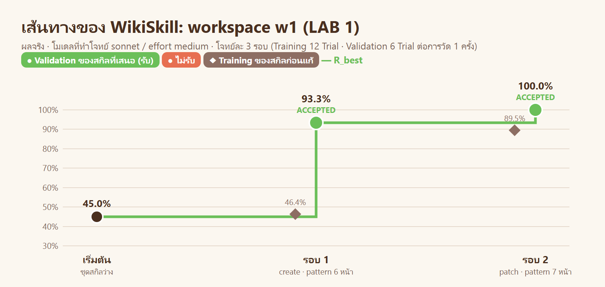
Validation 45.0% → 93.3% → 100.0% ใน 2 รอบ · ข้อเสนอผ่าน Gate ทั้ง 2 ครั้ง · 42 Trial · ใช้ 15 นาที
w1)รอบที่ 1 ทีละขั้น: แต่ละคำสั่งเปลี่ยนชั้นใดตารางหลัก
| ขั้น | ชั้นที่เปลี่ยน | ไฟล์ที่เกิดหรือเปลี่ยน | ผลจริง |
|---|---|---|---|
baseline | – | state.json | Validation ของชุดสกิลว่าง 45.0% = R_best เริ่มต้น |
rollout | Raw | raw/iter-01/traces/ 12 ไฟล์ · summary.md | Training 46.4% · ผ่านครบ 0/12 |
maintain | Wiki | wiki/patterns/ 6 หน้า · index.md · log.md | อ่าน Trace 5 ไฟล์ · เรียกโมเดล 1 ครั้ง (99 วินาที) |
propose | ยังไม่เปลี่ยน | history/iter-01/proposal.json · candidate/ | เปิด pattern 2 หน้า + Trace 4 ไฟล์ → create สกิล solve-py-contract |
gate | Skills + Wiki | skills/solve-py-contract/ · wiki/skill-impact.md | Validation 93.3% > 45.0% → ACCEPTED |
loop รอบที่ 2 | ทั้ง 3 ชั้น | raw/iter-02/ · pattern ใหม่ 1 หน้า แก้ 6 หน้า · patch สกิลเดิม | Training 89.5% → Validation 100.0% → ACCEPTED → หยุด |
w1)สมุดความรู้ของ w1 เมื่อจบ: wiki/index.md 7 บรรทัด
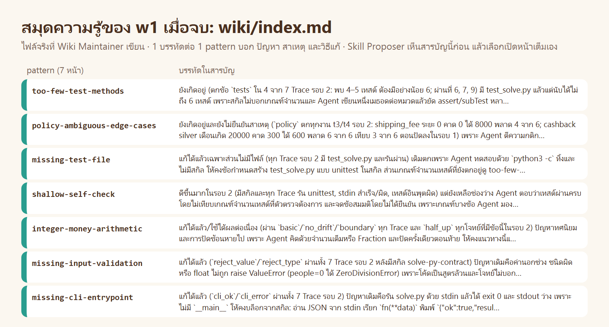
อ่านบรรทัดที่ 2 ของสารบัญ: Wiki จดว่าข้อตรวจ policy ยังเกิดอยู่และยังไม่ยืนยันสาเหตุ และสกิลไม่ได้แตะเรื่องนี้ · LAB 2 จะวัดว่าเรื่องนี้กระทบคะแนนเท่าไร
w1)รอบที่ 2: Wiki ทำงานข้ามรอบ จึงอ่านน้อยลงและแก้เฉพาะจุดruns/w1/history
รอบที่ 1 · Wiki ว่าง
- Wiki Maintainer อ่าน Trace: ไม่ผ่าน 5 (ไม่มีงานที่ผ่าน)
- Wiki: สร้าง 6 หน้า
- Skill Proposer เปิดไฟล์: pattern 2 หน้า + Trace 4 ไฟล์
- ข้อเสนอ:
createทั้งสกิล (96 บรรทัด) - เวลาของ Skill Proposer: 39 วินาที
รอบที่ 2 · มี Wiki ของรอบที่ 1
- Wiki Maintainer อ่าน Trace: ไม่ผ่าน 5 + ผ่าน 2
- Wiki: สร้าง 1 หน้า (
too-few-test-methods.md) · เติม 6 หน้าเดิม ว่าแก้ได้แล้วหรือยัง - Skill Proposer เปิดไฟล์:
SKILL.mdเดิม + pattern 1 หน้า (หน้าใหม่) + Trace 4 ไฟล์ - ข้อเสนอ:
patchเฉพาะส่วนเทสต์ (เป็น 107 บรรทัด) - เวลาของ Skill Proposer: 20 วินาที
w1)สิ่งที่รอบที่ 2 แก้ในสกิล: เกณฑ์จำนวนเทสต์
-รัน `python3 -m unittest test_solve -v` ในโฟลเดอร์นั้นให้ผ่านทุกเทสต์ก่อนตอบ
+### ต้องมีอย่างน้อย 8 เมธอด `def test_...` แยกกัน
+ตัวตรวจนับจำนวนเมธอดที่ unittest รายงาน (บรรทัด `Ran N tests`) และต้องได้อย่างน้อย 6 การวน for หรือ `subTest` … นับเป็น 1 เทสต์
+รัน `python3 -m unittest test_solve -v` … แล้วอ่านบรรทัด `Ran N tests` ถ้า N < 8 ให้แตกเมธอดเพิ่มแล้วรันใหม่ก่อนตอบwiki/skill-impact.md · ข้อเสนอรอบที่ 1 เป็น create ทั้งสกิล รอบที่ 2 เป็น patch เฉพาะส่วนเทสต์w1)สกิลที่ได้ทั้งไฟล์: solve-py-contract (107 บรรทัด)
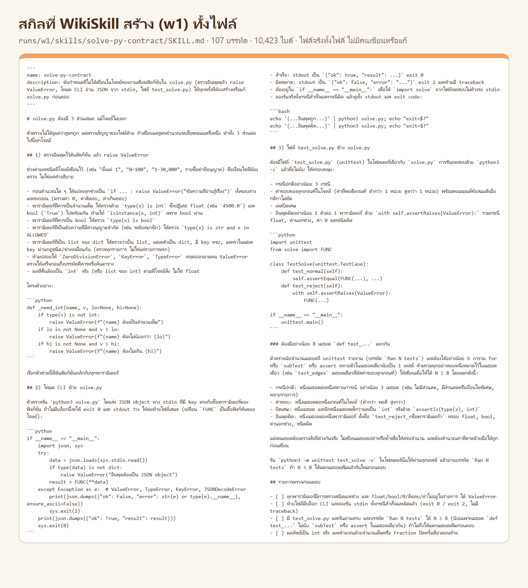
ไฟล์จริง: SKILL.md · PURPOSE.md (สกิลนี้แก้ pattern ใดใน Wiki) · คลิกภาพเพื่อขยาย
วัดสกิลที่ได้ เทียบกับไม่มีสกิล และ v3 ของบท 05
วัดสกิลของ w1 กับโจทย์ 9 ข้อ เทียบกับไม่มีสกิล และ v3 ของบท 05
w1 97.9% · Test 100% · policy 0/6v3 ของบท 05LAB 2 ทำอะไร
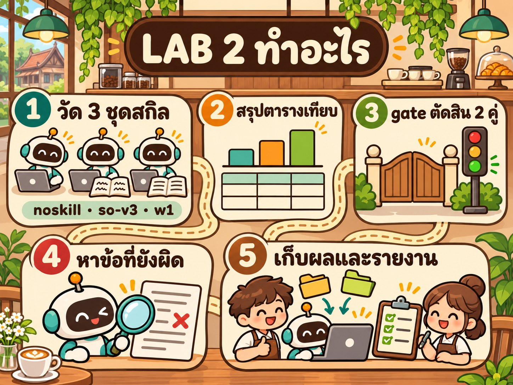
noskill · so-v3 · w1 กับโจทย์ทั้ง 9 ข้อ · ชุดละ 27 Trial รวม 81 Trialreport)gate ของ skill-optimizer ตัดสิน noskill → w1 และ so-v3 → w1 ด้วยกติกาเดียวกับบท 05w1 ยังไม่ผ่าน (failures ของชุด train และชุด test)v3 ของบท 05LAB 2 · วัดสกิลที่ได้ เทียบกับไม่มีสกิล และ v3 ของบท 05 · ไฟล์เข้าและออก
runs/w1/skills/ สกิลของ WikiSkillruns/so-v3/skills/ สกิล v3 ของบท 05suite/suite.json โจทย์ 9 ข้อruns/report.md · runs/results.json ตารางเทียบv3 ของบท 05พรอมต์ · LAB 2 · วัดสกิลที่ได้ เทียบกับไม่มีสกิล และ v3 ของบท 05Copy & Paste
งาน: วัดสกิลที่ WikiSkill สร้าง (w1) กับโจทย์ทั้ง 9 ข้อ · เทียบกับการไม่ใช้สกิล และสกิล v3 ของบท 05
ที่ทำงาน : container multi-account โฟลเดอร์ /workspace/wklab
เครื่องมือ : สกิล skill-optimizer
เงื่อนไข : ห้ามเปิดตัวตรวจ suite/grade.py และเฉลย suite/ref/ · โจทย์ของ Validation Set ดูได้แค่คะแนนรวม · ผลรายข้อของ Test Set เปิดได้หลังวัดครบทั้ง 3 ชุดแล้วเท่านั้น
Input: โจทย์ 9 ข้อใน suite/suite.json (ข้อละ 1 ฟังก์ชันคิดเงิน)
- Training Set 4 ข้อ: t1-cafe-bill t2-split-bill t3-shipping-fee t4-cashback
- Validation Set 2 ข้อ: v1-parking-fee v2-net-pay
- Test Set 3 ข้อ ไม่เคยถูกใช้ปรับสกิลทั้งสองวิธี: x1-late-fee x2-refund x3-bulk-price
วิธีทดลอง:
- 1 Trial = Agent 1 ตัว (โมเดล sonnet · effort medium) ได้โจทย์ 1 ข้อ แล้วเขียน solve.py และ test_solve.py ในโฟลเดอร์ว่าง
- โจทย์แต่ละข้อทำซ้ำ 3 รอบ → 1 ชุดสกิล = 9 โจทย์ × 3 รอบ = 27 Trial
- LAB นี้วัด 3 ชุดสกิล → รวม 81 Trial
- noskill ไม่มีสกิล
- so-v3 สกิล money-coder รุ่น v3 ของบท 05 (runs/so-v3/skills) · คนเขียนรุ่นแรก แล้วปรับ 3 รอบ
- w1 สกิลที่ WikiSkill สร้างใน LAB 1 (runs/w1/skills) · ไม่มีคนเขียน
- ใช้ทุกบัญชี yolo ที่ล็อกอินแล้ว รันพร้อมกันไม่เกิน 6 Trialv3 ของบท 05พรอมต์ · LAB 2 · วัดสกิลที่ได้ เทียบกับไม่มีสกิล และ v3 ของบท 05Copy & Paste
วิธีตรวจ:
- ทุก Trial ตัวตรวจ suite/grade.py รันโค้ดที่ Agent เขียน แล้วให้คะแนน 0–1 = สัดส่วนข้อตรวจที่ผ่าน (10 หรือ 11 ข้อต่อโจทย์)
- คะแนนของชุดสกิล = ค่าเฉลี่ยของ 27 Trial
- gate ของ skill-optimizer เทียบชุดใหม่กับชุดฐาน แล้วตอบ ACCEPT หรือ REJECT ด้วยกติกาเดียวกับบท 05
ทำตามลำดับ:
1. วัด noskill · so-v3 · w1 กับโจทย์ทุกชุด
2. สรุป ตารางเทียบ 3 ชุด (report) บันทึกที่ runs/report.md
3. ตัดสิน gate noskill → w1 และ gate so-v3 → w1 ใช้ต้นทุน context_tokens บันทึกที่ runs/w1/gate-noskill.txt และ runs/w1/gate-so-v3.txt
4. หาข้อผิด ข้อตรวจที่ w1 ยังไม่ผ่าน (failures ของชุด train และชุด test) บันทึกที่ runs/w1/failures.txt
5. เก็บผล คัดลอก runs/ จาก container มาไว้ที่ 03_week03/06_WikiSkill/runs บนเครื่อง: เก็บ skills ไฟล์ผลของแต่ละชุด report.md results.json และของแต่ละ Trial เก็บ grade.json metrics.json กับโค้ดใน sandbox (ไม่เก็บ Trace ดิบ) · Trial ของ Validation Set เก็บแค่คะแนนและต้นทุน (grade.json เหลือเฉพาะ score · metrics.json ไม่มี commands และ result · ไม่มี sandbox)
6. รายงาน ตารางเทียบ 3 ชุด · ผล gate 2 คู่ · ข้อตรวจที่ w1 ยังไม่ผ่าน และสาเหตุที่เห็นจากข้อความของตัวตรวจv3 ของบท 05ตรวจผลของคุณ · LAB 2 · วัดสกิลที่ได้ เทียบกับไม่มีสกิล และ v3 ของบท 05Checklist
so-v3 100.0% · w1 97.9% (Test 100.0%) · noskill → w1 ACCEPT · so-v3 → w1 REJECT · policy 0/6 · ใช้ 6 นาทีstatus กับ gatev3 ของบท 05ผลจริง LAB 2: สกิลที่ไม่มีคนเขียน ได้ 100.0% บน Test Setruns/results.json
so-v3 · Skill Optimizerw1 · WikiSkillw1so-v3 100.0% · ไม่มีสกิล 47.8%policy ของ w1v3 ที่คนเขียนและปรับ 3 รุ่น · จุดเดียวที่ต่างคือ Training 95.2%v3 ของบท 05คะแนนของสกิล 3 ชุดบนโจทย์ 9 ข้อ
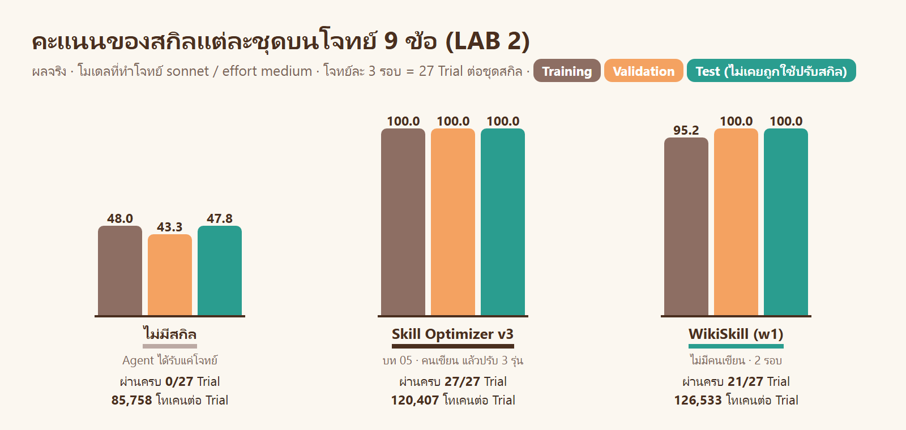
ไม่มีสกิล · so-v3 (Skill Optimizer บท 05) · w1 (WikiSkill) · ชุดละ 27 Trial
v3 ของบท 05gate ของบท 05 ตัดสิน: ดีกว่าไม่มีสกิลมาก แต่ยังแทน v3 ไม่ได้runs/w1/gate-*.txt
ไม่มีสกิล → w1
ACCEPT · รวม +51.0 จุด (เกณฑ์ 2.0)
so-v3 → w1
REJECT · Training ลด 4.8 จุด (เกณฑ์ 2.0)
ข้อความที่คำสั่ง gate พิมพ์จริง (runs/w1/gate-so-v3.txt)
train: 100.0% → 95.2% (-4.8) · เกณฑ์ 2.0 จุด · ค่าใช้จ่าย $0.12 → $0.14 · คำสั่ง 3.0 → 3.2
✗ คะแนนชุด train ลดลงเกิน 2.0 จุด → การแก้ไม่ได้ผล
val: 100.0% → 100.0% (+0.0) · เกณฑ์ 2.0 จุด · ค่าใช้จ่าย $0.12 → $0.13 · คำสั่ง 2.8 → 2.3
ผล: REJECT ❌ ไม่รับ w1 แทน so-v3v3 ของบท 05สกิลแต่ละชุดครอบคลุมความรู้ข้อใด
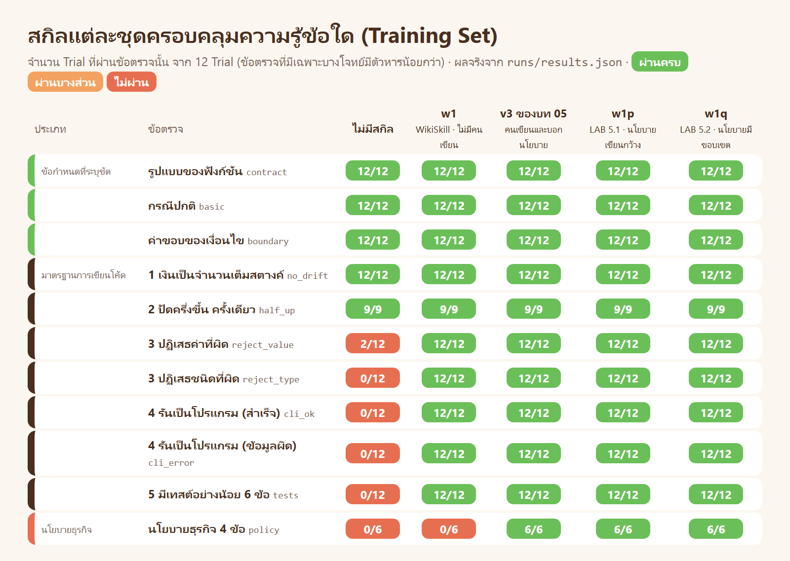
w1 ผ่านมาตรฐานการเขียนโค้ดครบ แต่นโยบายธุรกิจ 0/6 · (ภาพนี้มี w1p และ w1q ของ LAB 5 ด้วย)
v3 ของบท 05ข้อเดียวที่ w1 ยังไม่ผ่าน คือ policyruns/w1/failures.txt
✗ policy: shipping_fee(3000, 0, false) คาด 0 ได้ 8000 · พลาด 4 จาก 6 กรณี
✗ policy: cashback(20000, "silver", true) คาด 300 ได้ 600 · พลาด 6 จาก 6 กรณีกลุ่ม 1 · มาตรฐานการเขียนโค้ด 5 ข้อ · ได้ครบ
เกิดซ้ำทุกโจทย์ ข้อความของตัวตรวจบอกว่าคาดอะไร และ Validation ตรวจด้วย
กลุ่ม 2 · นโยบายธุรกิจ 4 ข้อ · ไม่ได้
มีแค่ 2 โจทย์ ตัวตรวจบอกตัวอย่างเดียว Wiki จึงจดว่า "ยังไม่ยืนยัน" · Validation ไม่มีข้อตรวจนี้ วงรอบจึงหยุดที่ 100%
policy-ambiguous-edge-cases.md ตั้งสมมติฐานไว้ถูกทาง ("ระยะ 0 ได้ค่าส่ง 0" · "silver เดือนเกิดไม่คูณ 2" · "ทิศทางการปัดเศษของ cashback") แต่ไม่ยอมใส่ลงสกิลเพราะยังไม่มีหลักฐานยืนยัน · LAB 5 จะเติมส่วนนี้รันซ้ำด้วยค่าเดิม (w2)
รันซ้ำด้วยค่าเดิม (w2)
w2)LAB 3 ทำอะไร
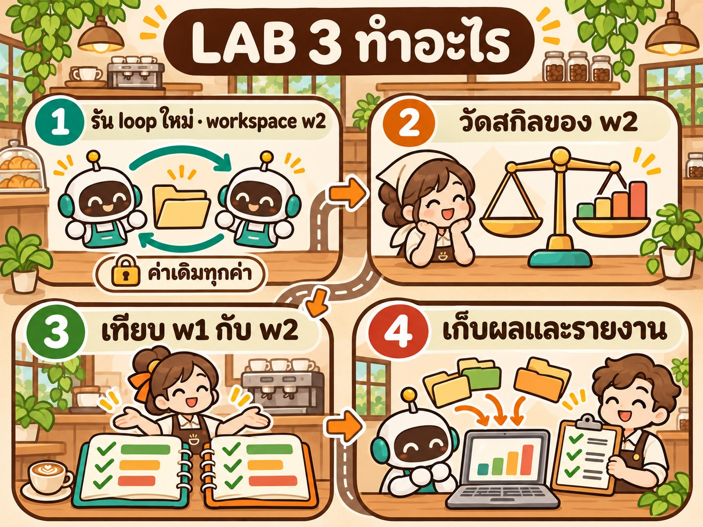
w2 แล้วรัน loop จนวงรอบหยุด · ค่าทุกตัวเหมือน w1 ใน LAB 1w2 กับโจทย์ทั้ง 9 ข้อ ข้อละ 3 รอบ = 27 Trial แล้วสรุปตารางเทียบ noskill so-v3 w1 w2w1 กับ w2: จำนวนรอบ · pattern ใน wiki/index.md · ข้อเสนอและผลตัดสินของแต่ละรอบ · คะแนนของสกิลที่ได้w2)LAB 3 · รันซ้ำด้วยค่าเดิม · ไฟล์เข้าและออก
runs/w2/trials/ 27 Trial ของสกิลที่ได้runs/report.md ตารางเทียบ 4 ชุดw2)พรอมต์ · LAB 3 · รันซ้ำด้วยค่าเดิมCopy & Paste
งาน: รัน WikiSkill ซ้ำอีก 1 ครั้งด้วยค่าเดิมทุกค่า (workspace w2) แล้วเทียบกับ w1 · ดูว่าผลของวงรอบซ้ำได้แค่ไหน
ที่ทำงาน : container multi-account โฟลเดอร์ /workspace/wklab
เครื่องมือ : สกิล wikiskill (รันวงรอบ) และสกิล skill-optimizer (วัดสกิลที่ได้)
เงื่อนไข : ห้ามเปิดตัวตรวจ suite/grade.py และเฉลย suite/ref/ · โจทย์ของ Validation Set ดูได้แค่คะแนนรวม · ห้ามแก้ไฟล์ใน raw/ wiki/ skills/ เอง
Input: โจทย์ 9 ข้อใน suite/suite.json (ข้อละ 1 ฟังก์ชันคิดเงิน)
- Training Set 4 ข้อ ใช้สร้าง Trace: t1-cafe-bill t2-split-bill t3-shipping-fee t4-cashback
- Validation Set 2 ข้อ ใช้ตัดสิน: v1-parking-fee v2-net-pay
- Test Set 3 ข้อ ใช้วัดตอนจบ: x1-late-fee x2-refund x3-bulk-price
วิธีทดลอง:
- workspace ชื่อ w2 · ค่าทุกตัวเหมือน w1 ใน LAB 1: เริ่มจากชุดสกิลว่างและ wiki ว่าง · ไม่เกิน 8 รอบ · Inference Agent sonnet effort medium โจทย์ละ 3 รอบ · Wiki Maintainer และ Skill Proposer sonnet effort high
- คำอธิบายงาน: "เขียนฟังก์ชัน Python สำหรับคิดเงินของร้านกาแฟ BaanKafe (ตัวตรวจอัตโนมัติให้คะแนนผลงาน)"
- เมื่อวงรอบหยุด วัดสกิลของ w2 กับโจทย์ทั้ง 9 ข้อ ข้อละ 3 รอบ = 27 Trial (ค่าเดียวกับ LAB 2)
- ใช้ทุกบัญชี yolo ที่ล็อกอินแล้ว รันพร้อมกันไม่เกิน 6 Trialw2)พรอมต์ · LAB 3 · รันซ้ำด้วยค่าเดิมCopy & Paste
วิธีตรวจ:
- ทุก Trial ตัวตรวจ suite/grade.py รันโค้ดที่ Agent เขียน แล้วให้คะแนน 0–1 = สัดส่วนข้อตรวจที่ผ่าน (10 หรือ 11 ข้อต่อโจทย์)
- Gate ของ WikiSkill รับสกิลที่เสนอเมื่อคะแนน Validation สูงกว่า R_best เท่านั้น · วงรอบหยุดเมื่อ R_best = 100% หรือครบ 8 รอบ
ทำตามลำดับ:
1. รัน สร้าง workspace w2 แล้วรัน loop จนวงรอบหยุด · บันทึกผลของ status ที่ runs/w2/status.txt
2. วัด สกิลของ w2 กับโจทย์ทุกชุด (ป้าย w2) แล้วสรุปตารางเทียบ noskill so-v3 w1 w2 (report) บันทึกที่ runs/report.md
3. เทียบ w1 กับ w2: จำนวนรอบ · pattern ใน wiki/index.md · ข้อเสนอและผลตัดสินของแต่ละรอบ (wiki/skill-impact.md) · คะแนนของสกิลที่ได้
4. เก็บผล คัดลอก runs/w2 และ runs/report.md runs/results.json จาก container มาไว้ที่ 03_week03/06_WikiSkill/runs บนเครื่อง: ไม่เก็บ Trace ดิบ (transcript.jsonl และไฟล์ *_transcript_*) โฟลเดอร์ proposer_view และ rollouts/suite · Trial ของ Validation Set เก็บแค่คะแนนและต้นทุน (grade.json เหลือเฉพาะ score · metrics.json ไม่มี commands และ result · ไม่มี sandbox)
5. รายงาน ตาราง status ของ w2 · ตารางเทียบ w1 กับ w2 · สิ่งที่เหมือนกันและสิ่งที่ต่างกันw2)ตรวจผลของคุณ · LAB 3 · รันซ้ำด้วยค่าเดิมChecklist
w2 ใช้ 1 รอบ (Validation 100.0% ตั้งแต่รอบแรก) · สกิล solve-py-deliverable 76 บรรทัด · รวม 96.8% · Test 97.8% · policy 0/6 · ใช้ 12 นาทีstatus กับ gatew2)เส้นทางของ w2: สกิลที่เสนอในรอบแรกได้ Validation 100.0% วงรอบจึงหยุด
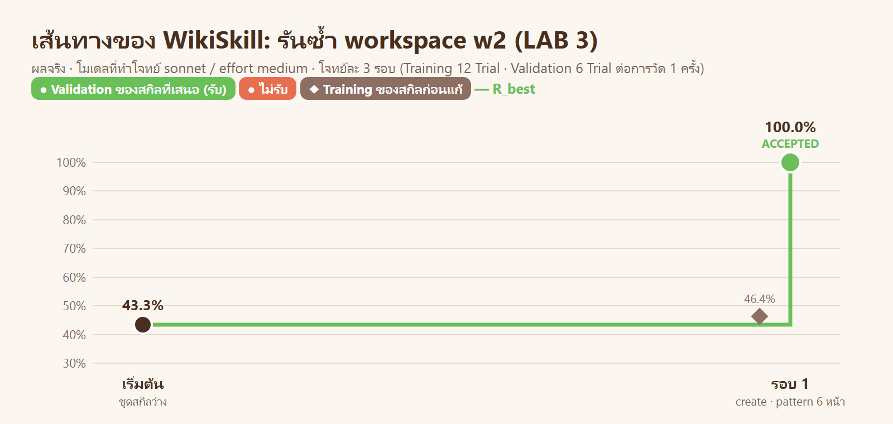
ค่าทุกตัวเหมือน w1 · สกิลที่ได้ชื่อ solve-py-deliverable · สถานะ: หยุดแล้ว เพราะ R_best = 100% ที่รอบ 1 (หยุดก่อนครบ 8 รอบ)
w2)รันซ้ำด้วยค่าเดิม: ผลรวมใกล้กัน แต่เส้นทางต่างกันตารางหลัก
w1 (LAB 1) | w2 (LAB 3) | |
|---|---|---|
| รอบที่ใช้ | 2 | 1 |
| Validation หลังรอบที่ 1 | 93.3% → ทำรอบที่ 2 | 100.0% → หยุด |
| pattern ใน Wiki | 7 หน้า | 6 หน้า |
| สกิลที่ได้ | solve-py-contract 107 บรรทัด | solve-py-deliverable 76 บรรทัด |
| รู้เกณฑ์ "เทสต์อย่างน้อย 6 ข้อ" | รู้ (จากรอบที่ 2) | ไม่รู้ |
| Trial ระหว่างปรับ | 42 | 24 |
| คะแนนรวม 27 Trial | 97.9% (ผ่านครบ 21/27) | 96.8% (ผ่านครบ 18/27) |
| Test Set | 100.0% | 97.8% |
ข้อตรวจ policy | 0/6 · Wiki จดว่ายังไม่ยืนยัน | 0/6 · Wiki จดว่ายังไม่ยืนยัน |
w2)w2 หยุดเร็วกว่า เพราะ Validation ผ่านครบตั้งแต่รอบแรก
Validation 6 Trial ผ่านครบ
ไม่ได้แปลว่าสกิลครบ
w2 หยุดเร็วกว่าเพราะ Validation 6 Trial ผ่านครบในรอบแรก จึงไม่มีรอบที่ 2 ที่จะพบว่าเทสต์ยังไม่ถึง 6 ข้อ · จุดอ่อนนี้โผล่ตอนวัด 27 Trial: unittest พบ 5 เทสต์ (ต้องมีอย่างน้อย 6) 3 Trial · Gate ของ WikiSkill ไม่คิดความแกว่งของการวัด การหยุดจึงขึ้นกับโชคของ Validation ครั้งนั้นการทดลองตัดส่วนประกอบ: ไม่มี Wiki (n1)
ตัด Wiki ออก (n1)
n1)LAB 4 ทำอะไร
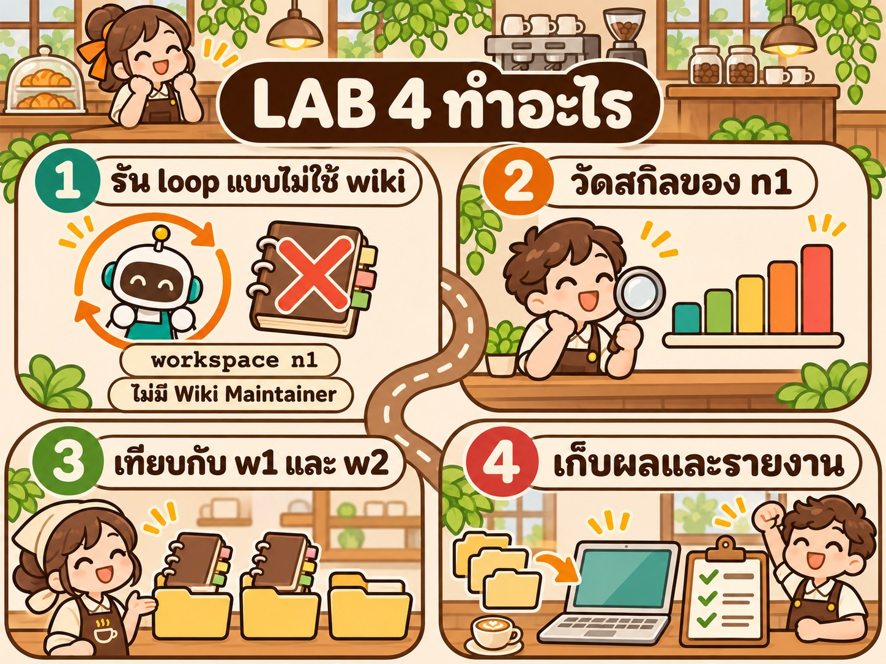
n1 แบบ ไม่ใช้ wiki แล้วรัน loop จนวงรอบหยุด · ไม่มี Wiki Maintainer · Skill Proposer เห็นเฉพาะ Trace ของรอบล่าสุดn1 กับโจทย์ทั้ง 9 ข้อ ข้อละ 3 รอบ = 27 Trialn1 กับ w1 และ w2: จำนวนรอบ · จำนวน Trial · จำนวนการเรียกโมเดลของผู้ปรับสกิล · คะแนน · สิ่งที่เหลือในโฟลเดอร์เมื่อจบn1 ไม่มีเมื่อจบn1)LAB 4 · การทดลองตัดส่วนประกอบ · ไฟล์เข้าและออก
runs/n1/trials/ 27 Trial ของสกิลที่ได้runs/report.md ตารางเทียบ 5 ชุดn1)พรอมต์ · LAB 4 · การทดลองตัดส่วนประกอบCopy & Paste
งาน: การทดลองตัดส่วนประกอบ (Ablation) · รัน WikiSkill แบบไม่มี Wiki (workspace n1) แล้วเทียบกับ w1 และ w2
ที่ทำงาน : container multi-account โฟลเดอร์ /workspace/wklab
เครื่องมือ : สกิล wikiskill (รันวงรอบ) และสกิล skill-optimizer (วัดสกิลที่ได้)
เงื่อนไข : ห้ามเปิดตัวตรวจ suite/grade.py และเฉลย suite/ref/ · โจทย์ของ Validation Set ดูได้แค่คะแนนรวม · ห้ามแก้ไฟล์ใน raw/ skills/ เอง
Input: โจทย์ 9 ข้อใน suite/suite.json (ข้อละ 1 ฟังก์ชันคิดเงิน)
- Training Set 4 ข้อ ใช้สร้าง Trace: t1-cafe-bill t2-split-bill t3-shipping-fee t4-cashback
- Validation Set 2 ข้อ ใช้ตัดสิน: v1-parking-fee v2-net-pay
- Test Set 3 ข้อ ใช้วัดตอนจบ: x1-late-fee x2-refund x3-bulk-price
วิธีทดลอง:
- workspace ชื่อ n1 · ค่าทุกตัวเหมือน w1 ใน LAB 1 ยกเว้นข้อเดียว: **ไม่ใช้ wiki** (ไม่มี Wiki Maintainer · Skill Proposer เห็นเฉพาะ Trace ของรอบล่าสุด)
- คำอธิบายงาน: "เขียนฟังก์ชัน Python สำหรับคิดเงินของร้านกาแฟ BaanKafe (ตัวตรวจอัตโนมัติให้คะแนนผลงาน)"
- เมื่อวงรอบหยุด วัดสกิลของ n1 กับโจทย์ทั้ง 9 ข้อ ข้อละ 3 รอบ = 27 Trial (ค่าเดียวกับ LAB 2)
- ใช้ทุกบัญชี yolo ที่ล็อกอินแล้ว รันพร้อมกันไม่เกิน 6 Trialn1)พรอมต์ · LAB 4 · การทดลองตัดส่วนประกอบCopy & Paste
วิธีตรวจ:
- ทุก Trial ตัวตรวจ suite/grade.py รันโค้ดที่ Agent เขียน แล้วให้คะแนน 0–1 = สัดส่วนข้อตรวจที่ผ่าน (10 หรือ 11 ข้อต่อโจทย์)
- Gate ของ WikiSkill รับสกิลที่เสนอเมื่อคะแนน Validation สูงกว่า R_best เท่านั้น · วงรอบหยุดเมื่อ R_best = 100% หรือครบ 8 รอบ
ทำตามลำดับ:
1. รัน สร้าง workspace n1 แบบไม่ใช้ wiki แล้วรัน loop จนวงรอบหยุด · บันทึกผลของ status ที่ runs/n1/status.txt
2. วัด สกิลของ n1 กับโจทย์ทุกชุด (ป้าย n1) แล้วสรุปตารางเทียบ noskill so-v3 w1 w2 n1 (report) บันทึกที่ runs/report.md
3. เทียบ n1 กับ w1 และ w2: จำนวนรอบ · ข้อเสนอที่ถูกรับและถูกปฏิเสธ · จำนวน Trial · จำนวนการเรียกโมเดลของผู้ปรับสกิล · คะแนนของสกิลที่ได้ · สิ่งที่เหลือในโฟลเดอร์เมื่อจบ
4. เก็บผล คัดลอก runs/n1 และ runs/report.md runs/results.json จาก container มาไว้ที่ 03_week03/06_WikiSkill/runs บนเครื่อง: ไม่เก็บ Trace ดิบ (transcript.jsonl และไฟล์ *_transcript_*) โฟลเดอร์ proposer_view และ rollouts/suite · Trial ของ Validation Set เก็บแค่คะแนนและต้นทุน (grade.json เหลือเฉพาะ score · metrics.json ไม่มี commands และ result · ไม่มี sandbox)
5. รายงาน ตาราง status ของ n1 · ตารางเทียบ n1 กับ w1 และ w2 · สิ่งที่ n1 ไม่มีเมื่อจบn1)ตรวจผลของคุณ · LAB 4 · การทดลองตัดส่วนประกอบChecklist
n1 ใช้ 1 รอบ · 24 Trial · เรียกโมเดลของผู้ปรับสกิล 5 ครั้ง · รวม 95.7% · Test 95.6% · เหลือสกิลอย่างเดียว · ใช้ 7 นาทีstatus กับ gaten1)เส้นทางของ n1: ไม่มี Wiki สกิลที่เสนอในรอบแรกได้ Validation 100% วงรอบจึงหยุด
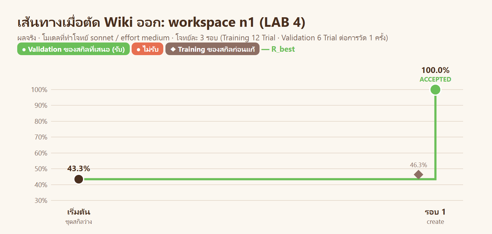
เปเปอร์รายงานว่าเมื่อตัด Wiki ออก คะแนนเฉลี่ยลดจาก 63.7% เหลือ 48.7% · LAB นี้ลองกับโจทย์ของเรา: ไม่มี Wiki Maintainer และ Skill Proposer เห็นเฉพาะ Trace ของรอบล่าสุด
n1)ผลจริง LAB 4: ตัด Wiki ออก คะแนนไม่ต่างกันชัดเจนไม่มี Wiki · n1
w1 97.9% · w2 96.8%w1 100.0% · w2 97.8%w1 2 · w2 1w1 16 ครั้ง · w2 11 ครั้งw1 0 · w2 3n1 และ w2 หยุดที่รอบแรกเหมือนกัน และพลาดข้อเดียวกัน) · โจทย์นี้จบใน 1–2 รอบ จึงยังไม่มีความรู้ข้ามรอบให้สะสมมากพอจะเห็นผลแบบในเปเปอร์ที่รัน 8 รอบn1)สิ่งที่ต่างชัดคือสิ่งที่เหลือเมื่อจบ
มี Wiki · w1
- เหลือ: สกิล + Wiki 7 หน้า + ประวัติข้อเสนอพร้อม diff
- เรื่องนโยบายธุรกิจ: Wiki จดว่ายังไม่ยืนยัน พร้อมสมมติฐาน
มี Wiki · w2
- เหลือ: สกิล + Wiki 6 หน้า + ประวัติข้อเสนอ
- เรื่องนโยบายธุรกิจ: Wiki จดว่ายังไม่ยืนยัน
ไม่มี Wiki · n1
- เหลือ: สกิลอย่างเดียว
- เรื่องนโยบายธุรกิจ: ไม่มีบันทึก
n1 ถูกกว่า (5 ครั้งเทียบกับ 11–16 ครั้ง) แต่ไม่มีอะไรบอกว่าสกิลนี้มาจากหลักฐานใด และไม่มีใครจดว่ามีเรื่องที่ยังไม่รู้ · ความรู้ข้อนี้จำเป็นใน LAB 5เติมความรู้จากทีม (w1p → w1q)
เติมนโยบายธุรกิจจากทีม (w1p · w1q)
w1p REJECT · w1q 100.0% ACCEPTw1p → w1q)ความรู้บางอย่างไม่อยู่ใน Trace: ต้องถามทีม

w1p → w1q)LAB 5 ทำอะไร
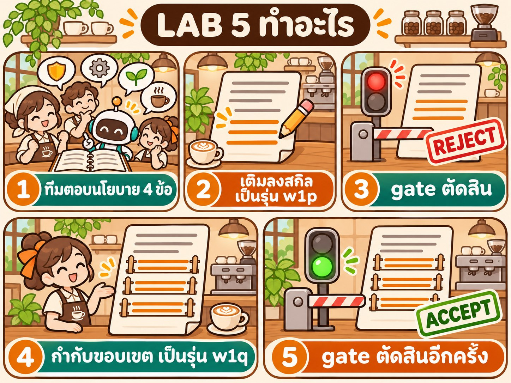
w1 จดว่ายังไม่ยืนยัน (นโยบายธุรกิจ 4 ข้อ อยู่ในพรอมต์)w1 เป็น w1p แก้ไม่เกิน 3 จุด · เขียนเป็นนโยบายของร้าน ห้ามใส่ Input หรือคำตอบของข้อตรวจgate ของบท 05 ตัดสิน w1 → w1pw1 อีกครั้งด้วยความรู้ชุดเดิม แต่ระบุว่านโยบายแต่ละข้อใช้กับฟังก์ชันใด เป็นรุ่น w1qgate ตัดสิน w1 → w1qw1p → w1q)ขั้น 5.1 · ไฟล์เข้าและออก
runs/w1/wiki/ เรื่องที่ยังไม่ยืนยัน · runs/w1/failures.txtruns/w1/skills/ สกิลรุ่นฐานruns/w1p/skills/ สกิลของ w1 + นโยบายธุรกิจruns/w1p/trials/ 27 Trialruns/w1p/gate-w1.txt · gate-so-v3.txt ผลตัดสินw1p → w1q)พรอมต์ · ขั้น 5.1 · เติมนโยบาย 4 ข้อ (w1p)Copy & Paste
งาน: ต่อยอดสกิลที่ WikiSkill สร้าง (w1) · เติมนโยบายธุรกิจที่ทีมยืนยันแล้ว ด้วยวิธีของบท 05 เป็นรุ่น w1p แล้วให้ gate ตัดสิน
ที่ทำงาน : container multi-account โฟลเดอร์ /workspace/wklab
เครื่องมือ : สกิล skill-optimizer
เงื่อนไข : ห้ามเปิดตัวตรวจ suite/grade.py และเฉลย suite/ref/ · โจทย์ของ Validation Set ดูได้แค่คะแนนรวม · ห้ามแก้ไฟล์ใน runs/w1 (สร้างรุ่นใหม่เท่านั้น)
Input: โจทย์ 9 ข้อใน suite/suite.json (ข้อละ 1 ฟังก์ชันคิดเงิน)
- Training Set 4 ข้อ ใช้หาข้อที่ผิด: t1-cafe-bill t2-split-bill t3-shipping-fee t4-cashback
- Validation Set 2 ข้อ ใช้ตัดสิน: v1-parking-fee v2-net-pay
- Test Set 3 ข้อ: x1-late-fee x2-refund x3-bulk-price
ความรู้จากทีม (คำตอบของเรื่องที่ wiki ของ w1 จดว่ายังไม่ยืนยัน):
- ระยะทาง 0 กม. คือลูกค้ารับเองที่ร้าน ไม่คิดค่าส่ง
- ส่งด่วนรับน้ำหนักไม่เกิน 20,000 กรัม เกินกว่านี้ถือเป็นข้อมูลผิด
- สิทธิ์เงินคืน 2 เท่าในเดือนเกิด ให้เฉพาะสมาชิก gold และ platinum
- เงินคืนเป็นเงินที่ร้านจ่ายออก ให้ปัดลง ไม่ปัดครึ่งขึ้น
วิธีทดลอง:
- รุ่นฐาน w1 = สกิลที่ WikiSkill สร้าง (วัดไว้แล้วใน LAB 2)
- รุ่นใหม่ w1p = สกิลของ w1 + นโยบายธุรกิจ
- 1 Trial = Agent 1 ตัว (โมเดล sonnet · effort medium) ได้โจทย์ 1 ข้อ แล้วเขียน solve.py และ test_solve.py ในโฟลเดอร์ว่าง
- วัดรุ่นใหม่ 1 รุ่น: 9 โจทย์ × 3 รอบ = 27 Trial ด้วยค่าเดียวกับ LAB 2
- ใช้ทุกบัญชี yolo ที่ล็อกอินแล้ว รันพร้อมกันไม่เกิน 6 Trialw1p → w1q)พรอมต์ · ขั้น 5.1 · เติมนโยบาย 4 ข้อ (w1p)Copy & Paste
วิธีตรวจ:
- ทุก Trial ตัวตรวจ suite/grade.py รันโค้ดที่ Agent เขียน แล้วให้คะแนน 0–1 = สัดส่วนข้อตรวจที่ผ่าน (10 หรือ 11 ข้อต่อโจทย์)
- gate เทียบรุ่นใหม่กับรุ่นฐาน แล้วตอบ ACCEPT หรือ REJECT: Training และ Validation ต้องไม่ลด และคะแนนรวมต้องดีขึ้นเกินความแกว่ง หรือเท่าเดิมแต่ต้นทุนลดอย่างน้อย 10%
ทำตามลำดับ:
1. หาจุดแก้ ดู 3 อย่าง: ข้อที่ผิดของ w1 (Training Set) · เรื่องที่ wiki ของ w1 จดว่ายังไม่ยืนยัน (runs/w1/wiki/index.md และหน้า pattern ที่เกี่ยวข้อง) · ความรู้จากทีมข้างบน
2. แก้ คัดลอก runs/w1/skills เป็น runs/w1p/skills แล้วแก้ไม่เกิน 3 จุด · เขียนเป็นนโยบายของร้าน ห้ามใส่ Input หรือคำตอบของข้อตรวจ
3. วัด รุ่น w1p กับโจทย์ทุกชุด
4. ตัดสิน gate w1 → w1p และ gate so-v3 → w1p ใช้ต้นทุน context_tokens บันทึกที่ runs/w1p/gate-w1.txt และ runs/w1p/gate-so-v3.txt · ตารางเทียบทุกชุด (report) บันทึกที่ runs/report.md
5. เก็บผล คัดลอก runs/w1p และ runs/report.md runs/results.json จาก container มาไว้ที่ 03_week03/06_WikiSkill/runs บนเครื่อง: เก็บ skills ไฟล์ผล และของแต่ละ Trial เก็บ grade.json metrics.json กับโค้ดใน sandbox (ไม่เก็บ Trace ดิบ) · Trial ของ Validation Set เก็บแค่คะแนนและต้นทุน (grade.json เหลือเฉพาะ score · metrics.json ไม่มี commands และ result · ไม่มี sandbox)
6. รายงาน จุดที่แก้ใน w1p และเหตุผล · ตารางเทียบทุกชุด · ผล gate 2 คู่w1p → w1q)ตรวจผลของคุณ · ขั้น 5.1 · เติมนโยบาย 4 ข้อ (w1p)Checklist
policy 0/6 → 6/6) · Validation 100.0% → 96.7% · Test 100.0% → 93.3% · รวม 97.9% → 97.0% · REJECTstatus กับ gatew1p → w1q)ผลจริงขั้น 5.1: w1 → w1p · REJECTruns/w1p/gate-w1.txt
policy 6/6w1pw1 ต่อw1p → w1q)นโยบายถูกทุกข้อ แต่ข้อสุดท้ายเขียนเป็นกติกาทั่วไป
+## นโยบายธุรกิจของร้าน (ทีมยืนยันแล้ว ใช้แทนการเดาเมื่อโจทย์ไม่บอก)
+### ค่าส่งและการส่งด่วน
+- ระยะทาง 0 กม. คือลูกค้ารับเองที่ร้าน ไม่คิดค่าส่ง
+- ส่งด่วนรับน้ำหนักไม่เกิน 20,000 กรัม เกินกว่านี้ถือเป็นข้อมูลผิด ให้ raise ValueError
+### สิทธิ์เงินคืนในเดือนเกิด
+- สิทธิ์เงินคืน 2 เท่าในเดือนเกิด ให้เฉพาะสมาชิก gold และ platinum สมาชิกระดับอื่นได้อัตราปกติ
+### การปัดเศษเงินที่ร้านจ่ายออก
+- เงินคืนเป็นเงินที่ร้านจ่ายออก ให้ปัดลง ไม่ปัดครึ่งขึ้น (เงินที่ลูกค้าจ่ายเข้าร้านยังใช้กติกาปัดของโจทย์)ผลใน Test Set · งานคืนเงินคอร์ส x2-refund ของ w1p
✗ half_up: refund(150, 25, false) คาด 113 ได้ 112 · พลาด 3 จาก 3 กรณี ← x2-refund ของ w1p
# เงินที่ร้านจ่ายออก: ปัดลงครั้งเดียวตอนท้าย (จำนวนเต็มล้วน) ← โค้ดที่ Agent เขียนw1p → w1q)ขั้น 5.2 · ไฟล์เข้าและออก
runs/w1p/gate-w1.txt ผลของรุ่นที่ถูกปฏิเสธruns/w1/skills/ สกิลรุ่นฐานruns/w1q/skills/ สกิลของ w1 + นโยบายที่มีขอบเขตruns/w1q/trials/ 27 Trialw1p → w1q)พรอมต์ · ขั้น 5.2 · กำกับขอบเขตของนโยบาย (w1q)Copy & Paste
งาน: แก้รุ่นที่ถูกปฏิเสธ · สร้างรุ่น w1q จาก w1 ด้วยนโยบายธุรกิจชุดเดิม แต่กำกับขอบเขตของแต่ละข้อให้ชัด แล้วให้ gate ตัดสิน
ที่ทำงาน : container multi-account โฟลเดอร์ /workspace/wklab
เครื่องมือ : สกิล skill-optimizer
เงื่อนไข : ห้ามเปิดตัวตรวจ suite/grade.py และเฉลย suite/ref/ · โจทย์ของ Validation Set ดูได้แค่คะแนนรวม · ห้ามแก้ไฟล์ใน runs/w1 และ runs/w1p (สร้างรุ่นใหม่เท่านั้น)
Input: โจทย์ 9 ข้อใน suite/suite.json (ข้อละ 1 ฟังก์ชันคิดเงิน)
- Training Set 4 ข้อ ใช้หาข้อที่ผิด: t1-cafe-bill t2-split-bill t3-shipping-fee t4-cashback
- Validation Set 2 ข้อ ใช้ตัดสิน: v1-parking-fee v2-net-pay
- Test Set 3 ข้อ: x1-late-fee x2-refund x3-bulk-price
สิ่งที่รู้จากรุ่น w1p ที่ถูกปฏิเสธ (runs/w1p/gate-w1.txt และ runs/report.md):
- Training ขึ้นเป็น 100.0% แต่ Validation ลดจาก 100.0% เป็น 96.7% และ Test ลดจาก 100.0% เป็น 93.3%
- สมมติฐาน: นโยบายที่เขียนเป็นกติกาทั่วไป (เช่น "เงินที่ร้านจ่ายออก ให้ปัดลง") ถูก Agent นำไปใช้กับงานอื่นที่ไม่เกี่ยว
ความรู้จากทีม (ชุดเดิม):
- ระยะทาง 0 กม. คือลูกค้ารับเองที่ร้าน ไม่คิดค่าส่ง
- ส่งด่วนรับน้ำหนักไม่เกิน 20,000 กรัม เกินกว่านี้ถือเป็นข้อมูลผิด
- สิทธิ์เงินคืน 2 เท่าในเดือนเกิด ให้เฉพาะสมาชิก gold และ platinum
- เงินคืนเป็นเงินที่ร้านจ่ายออก ให้ปัดลง ไม่ปัดครึ่งขึ้นw1p → w1q)พรอมต์ · ขั้น 5.2 · กำกับขอบเขตของนโยบาย (w1q)Copy & Paste
วิธีทดลอง:
- รุ่นฐาน w1 = สกิลที่ WikiSkill สร้าง (วัดไว้แล้วใน LAB 2)
- รุ่นใหม่ w1q = สกิลของ w1 + นโยบายธุรกิจที่กำกับขอบเขต: นโยบายค่าส่งใช้กับฟังก์ชันคิดค่าส่งเท่านั้น · นโยบายเงินคืนใช้กับฟังก์ชันคิดเงินคืนสมาชิกเท่านั้น · งานอื่นทุกงานใช้กติกาเดิมของสกิล
- 1 Trial = Agent 1 ตัว (โมเดล sonnet · effort medium) ได้โจทย์ 1 ข้อ แล้วเขียน solve.py และ test_solve.py ในโฟลเดอร์ว่าง
- วัดรุ่นใหม่ 1 รุ่น: 9 โจทย์ × 3 รอบ = 27 Trial ด้วยค่าเดียวกับ LAB 2
- ใช้ทุกบัญชี yolo ที่ล็อกอินแล้ว รันพร้อมกันไม่เกิน 6 Trial
วิธีตรวจ:
- ทุก Trial ตัวตรวจ suite/grade.py รันโค้ดที่ Agent เขียน แล้วให้คะแนน 0–1 = สัดส่วนข้อตรวจที่ผ่าน (10 หรือ 11 ข้อต่อโจทย์)
- gate เทียบรุ่นใหม่กับรุ่นฐาน แล้วตอบ ACCEPT หรือ REJECT: Training และ Validation ต้องไม่ลด และคะแนนรวมต้องดีขึ้นเกินความแกว่ง หรือเท่าเดิมแต่ต้นทุนลดอย่างน้อย 10%
ทำตามลำดับ:
1. แก้ คัดลอก runs/w1/skills เป็น runs/w1q/skills แล้วแก้ไม่เกิน 3 จุด · เขียนเป็นนโยบายของร้านพร้อมขอบเขตของแต่ละข้อ ห้ามใส่ Input หรือคำตอบของข้อตรวจ
2. วัด รุ่น w1q กับโจทย์ทุกชุด
3. ตัดสิน gate w1 → w1q และ gate so-v3 → w1q ใช้ต้นทุน context_tokens บันทึกที่ runs/w1q/gate-w1.txt และ runs/w1q/gate-so-v3.txt · ตารางเทียบทุกชุด (report) บันทึกที่ runs/report.md
4. เก็บผล คัดลอก runs/w1q และ runs/report.md runs/results.json จาก container มาไว้ที่ 03_week03/06_WikiSkill/runs บนเครื่อง: เก็บ skills ไฟล์ผล และของแต่ละ Trial เก็บ grade.json metrics.json กับโค้ดใน sandbox (ไม่เก็บ Trace ดิบ) · Trial ของ Validation Set เก็บแค่คะแนนและต้นทุน (grade.json เหลือเฉพาะ score · metrics.json ไม่มี commands และ result · ไม่มี sandbox)
5. รายงาน จุดที่แก้ใน w1q เทียบกับ w1p · ตารางเทียบทุกชุด · ผล gate 2 คู่w1p → w1q)ตรวจผลของคุณ · ขั้น 5.2 · กำกับขอบเขตของนโยบาย (w1q)Checklist
w1 → w1q ACCEPT · so-v3 → w1q REJECT (โทเคนขาเข้ามากกว่า 12%)status กับ gatew1p → w1q)ผลจริงขั้น 5.2: w1 → w1q · ACCEPTruns/w1q/gate-w1.txt
policy 6/6w1qw1q แทน w1w1p → w1q)w1q: นโยบายชุดเดิม แต่บอกว่าใช้กับฟังก์ชันใด
+### 2. นโยบายเงินคืน (ใช้กับฟังก์ชันคิดเงินคืนสมาชิกเท่านั้น)
+ใช้เฉพาะเมื่อโจทย์ให้เขียนฟังก์ชันคิดเงินคืน (cashback) ของสมาชิก ไม่ใช้กับฟังก์ชันอื่น แม้จะมีการปัดเศษเงินเหมือนกัน
+- สิทธิ์เงินคืน 2 เท่าในเดือนเกิด ให้เฉพาะสมาชิก gold และ platinum สมาชิกระดับอื่นได้อัตราปกติ
+- เงินคืนเป็นเงินที่ร้านจ่ายออก ให้ปัดลง ไม่ปัดครึ่งขึ้น
+### 3. ขอบเขตของนโยบาย
+นโยบายข้อ 1 และ 2 ไม่มีผลกับงานอื่น … ใช้กติกาของโจทย์และกติกาเดิมของสกิลนี้เท่านั้นw1 อีกครั้งด้วยความรู้ชุดเดิม แต่ระบุว่านโยบายแต่ละข้อใช้กับฟังก์ชันใดw1p → w1q)ความรู้ชุดเดียวกัน เขียนต่างกันแค่ขอบเขต ผลตัดสินกลับด้านgate w1 → รุ่นใหม่
รวม −0.9 จุด
รวม +2.1 จุด
w1p ทำงานอื่นพังw1p → w1q)หลังเติมนโยบาย: w1p และ w1q ผ่าน policy ครบ เท่ากับ v3 ของบท 05
w1 ไม่ผ่าน policy · w1p และ w1q ผ่านครบ · ต่างกันที่ w1p ทำงานอื่นพัง
w1p → w1q)w1q ได้ 100.0% เท่ากับ v3 แต่ยังแทน v3 ไม่ได้gate so-v3 → w1q
ข้อความที่คำสั่ง gate พิมพ์จริง (runs/w1q/gate-so-v3.txt)
train: 100.0% → 100.0% (+0.0) · เกณฑ์ 2.0 จุด · ค่าใช้จ่าย $0.12 → $0.14 · คำสั่ง 3.0 → 3.2
val: 100.0% → 100.0% (+0.0) · เกณฑ์ 2.0 จุด · ค่าใช้จ่าย $0.12 → $0.14 · คำสั่ง 2.8 → 2.8
รวม: 100.0% → 100.0% (+0.0) · เกณฑ์ 2.0 จุด = ค่าที่มากกว่าระหว่าง eps 2.0 กับ z 1.5 × ความแกว่งของส่วนต่าง 0.0 จุด
✗ คะแนนรวมไม่ดีขึ้นเกินเกณฑ์ 2.0 จุด และโทเคนขาเข้าไม่ลดลงถึง 10% [โทเคนขาเข้า 1.204e+05 → 1.349e+05 (+12%)]
ผล: REJECT ❌ ไม่รับ w1q แทน so-v3w1q ได้ 100% เท่ากับ v3 ของบท 05 โดยคนทำแค่ตอบคำถาม 4 ข้อที่ Wiki จดไว้ · แต่ยังไม่ดีพอจะมาแทน v3 เพราะสกิลยาวกว่า (12.8 KB เทียบกับ 6.7 KB) และใช้โทเคนมากกว่าสรุปและแบบฝึกหัด
เทียบกับ Skill Optimizer · บทเรียนจากผลจริง · โจทย์ให้ลองต่อ
คะแนนของสกิลทุกชุดบนโจทย์ 9 ข้อ
ไม่มีสกิล · w1 · w2 · n1 · w1p · w1q · so-v3 ของบท 05 · ชุดละ 27 Trial
ผลของทุกชุดตารางหลัก
| ชุดสกิล | มาจาก | Training | Validation | Test | รวม | ผ่านครบ | โทเคนขาเข้าต่อ Trial |
|---|---|---|---|---|---|---|---|
| ไม่มีสกิล | – | 48.0% | 43.3% | 47.8% | 46.9% | 0/27 | 85,758 |
w1 | LAB 1 · WikiSkill 2 รอบ | 95.2% | 100.0% | 100.0% | 97.9% | 21/27 | 126,533 |
w2 | LAB 3 · WikiSkill รันซ้ำ 1 รอบ | 94.4% | 100.0% | 97.8% | 96.8% | 18/27 | 116,411 |
n1 | LAB 4 · ไม่มี Wiki 1 รอบ | 93.7% | 100.0% | 95.6% | 95.7% | 17/27 | 137,248 |
w1p | LAB 5.1 · w1 + นโยบายเขียนกว้าง | 100.0% | 96.7% | 93.3% | 97.0% | 23/27 | 124,598 |
w1q | LAB 5.2 · w1 + นโยบายมีขอบเขต | 100.0% | 100.0% | 100.0% | 100.0% | 27/27 | 134,948 |
so-v3 | บท 05 · Skill Optimizer | 100.0% | 100.0% | 100.0% | 100.0% | 27/27 | 120,407 |
runs/report.mdต้นทุนของการปรับสกิล: Skill Optimizer เทียบกับ WikiSkill
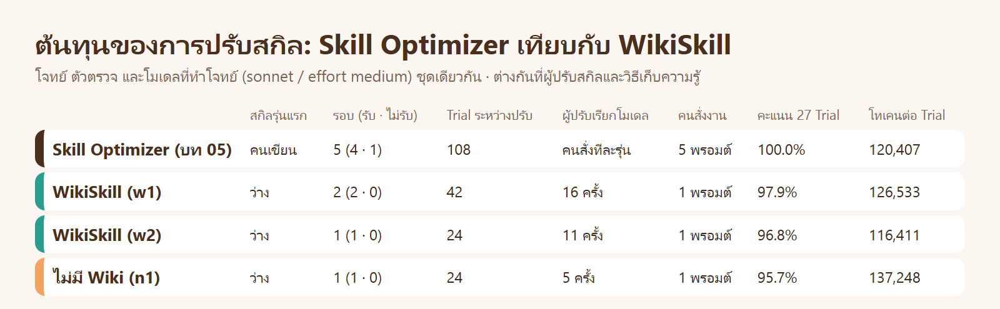
Trial ระหว่างปรับ และสิ่งที่คนต้องทำ ของทั้งสองวิธี บนโจทย์เดียวกัน
เทียบกับ Skill Optimizer ของบท 05ตารางหลัก
| ประเด็น | Skill Optimizer (บท 05) | WikiSkill (บทนี้) |
|---|---|---|
| สกิลรุ่นแรก | คนเขียน | ไม่มี · เริ่มจากว่าง |
| สิ่งที่คนทำ | เขียน v0 · สั่งทีละรุ่น 5 พรอมต์ · บอกนโยบาย 4 ข้อ | 1 พรอมต์ต่อการรัน · ตอบนโยบาย 4 ข้อใน LAB 5 |
| มาตรฐานการเขียนโค้ด 5 ข้อ | คนเขียนแบบกว้าง แล้ว Claude ทำให้ตรวจสอบได้ | ค้นพบเองจาก Trace |
| นโยบายธุรกิจ 4 ข้อ | คนบอกใน LAB 3 | ค้นพบเองไม่ได้ · Wiki จดว่ายังไม่ยืนยัน → คนบอกใน LAB 5 |
| ที่เก็บความรู้ | ISSUES.md ที่ Claude จดตามคำสั่ง | wiki/ ที่ระบบเขียนเอง พร้อมประวัติข้อเสนอและ diff |
| เกณฑ์ของ Gate | ต้องดีขึ้นเกินความแกว่ง หรือต้นทุนลด ≥ 10% | Validation ต้องสูงกว่าเดิมเท่านั้น |
| Trial ระหว่างปรับ | 108 | 24–42 |
| สกิลที่ได้ | 6.7 KB · 100% | 7.8–10.4 KB · 95.7–97.9% (100% หลังเติมนโยบาย · 12.8 KB) |
คำตอบของคำถาม 5 ข้อ จากผลจริงผล LAB 1–5
1ค้นพบมาตรฐานการเขียนโค้ด 5 ข้อเองได้หรือไม่
ได้ ทุกการรัน (w1 w2 n1) · ข้อที่พลาดบ้างมีข้อเดียวคือเกณฑ์จำนวนเทสต์ ซึ่งขึ้นกับว่าได้ทำรอบที่ 2 หรือไม่
2ค้นพบนโยบายธุรกิจได้หรือไม่
ไม่ได้ (policy 0/6 ทุกการรัน) · แต่ Wiki จดว่ามีเรื่องนี้และยังไม่ยืนยัน
3รันซ้ำได้ผลเดิมหรือไม่
ผลรวมใกล้กัน (97.9% และ 96.8%) แต่จำนวนรอบและรายละเอียดของสกิลต่างกัน
4ตัด Wiki ออกแล้วเป็นอย่างไร
คะแนนไม่ต่างชัดเจน (95.7%) เพราะโจทย์จบใน 1–2 รอบ · สิ่งที่หายคือความรู้ที่อ่านย้อนหลังได้
5ความรู้ที่หาเองไม่ได้ เติมอย่างไร
ให้คนตอบเรื่องที่ Wiki จดไว้ แล้วเติมลงสกิลแบบ มีขอบเขต และให้ gate ตัดสิน (w1q 100%)
สิ่งที่ผลจริงสอน
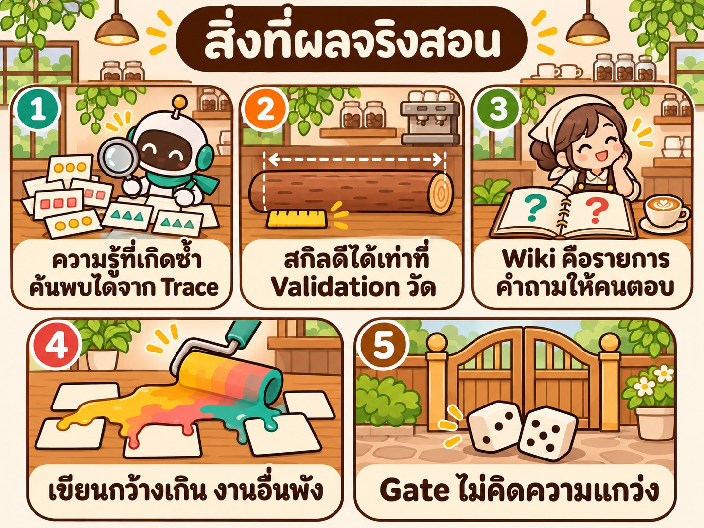
w1 97.9% โดยไม่มีคนเขียนสกิล: ความรู้แฝงที่เกิดซ้ำทุกงาน ค้นพบได้จาก Trace และข้อความของตัวตรวจpolicy 0/6 ทั้ง w1 w2 n1: Validation ที่ไม่มีข้อตรวจนี้ทำให้วงรอบหยุดที่ 100% · สกิลดีได้เท่าที่ Validation วัดw1p REJECT · w1q ACCEPT: ความรู้ที่ถูกต้องแต่เขียนกว้างเกิน ทำงานอื่นพัง · ทุกการแก้ต้องผ่านการวัดกับโจทย์ที่ไม่ได้ใช้ตอนแก้w1 2 รอบ · w2 1 รอบ: Gate รับเมื่อ "สูงกว่าเดิม" และหยุดเมื่อได้ 100% โดยไม่คิดความแกว่ง · Validation 6 Trial ผ่านครบได้โดยบังเอิญอีก 2 บทเรียน: เรื่อง Wiki และเรื่องต้นทุน
n1 ไม่มี Wiki ได้ 95.7%
โจทย์ที่จบเร็ว Wiki ยังไม่ให้ผลต่างด้านคะแนน · ประโยชน์ที่เปเปอร์วัดได้มาจากงานที่ปรับ 8 รอบและมีข้อเสนอถูกปฏิเสธ
w1q 100% แต่แพ้ v3 ที่ต้นทุน
WikiSkill ไม่มีเป้าหมายด้านต้นทุน สกิลจึงยาวกว่า · ต่อด้วยรอบลดต้นทุนของบท 05 ได้
เลือกใช้เมื่อไร
1ยังไม่มีสกิล และไม่รู้ว่างานมีกฎแฝงอะไร
เริ่มด้วย WikiSkill: ได้สกิลรุ่นแรกและ Wiki ที่บอกว่าพบอะไร ยังไม่รู้อะไร
2มีคนที่รู้กฎของงานอยู่แล้ว และต้องคุมต้นทุนของสกิล
Skill Optimizer: เริ่มจากความรู้ของคน และมีรอบลดต้นทุน
3งานมีความรู้เฉพาะที่ไม่ปรากฏในโจทย์ทั่วไป
ผสม: WikiSkill หาส่วนที่หาได้ → คนตอบเรื่องที่ Wiki เปิดไว้ → gate ของบท 05 ตัดสิน (LAB 5)
4งานยาก ต้องปรับหลายรอบ มีข้อเสนอล้มเหลวระหว่างทาง
WikiSkill: ความรู้ข้ามรอบไม่หาย (สิ่งที่เปเปอร์วัดได้ +15 จุด)
แบบฝึกหัด 6 ข้อ
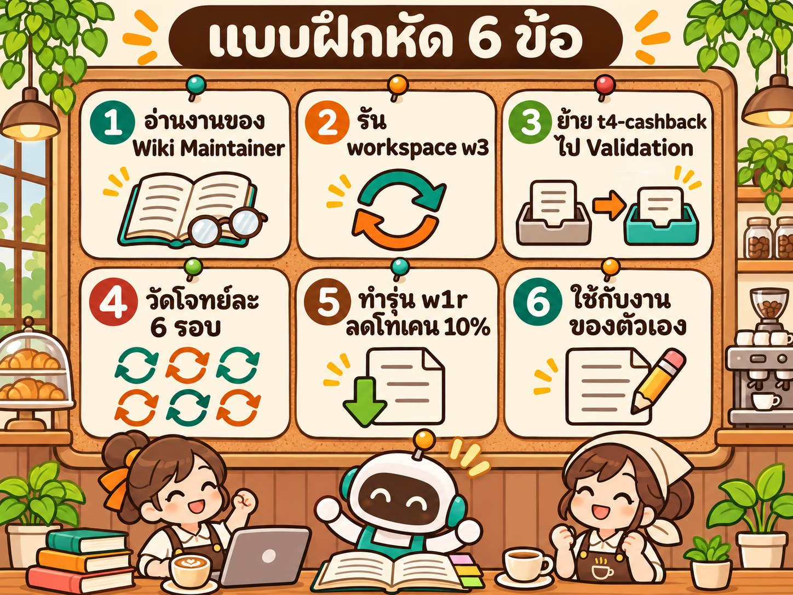
maintainer_input.md กับ maintainer_output.json ของ w1 รอบที่ 2 แล้วหาว่า Maintainer แก้หน้าเดิมด้วยรายการแก้แบบใดบ้าง (ไม่ใช้โทเคน)w3 ด้วยค่าเดิม แล้วเติมแถวที่ 3 ในตารางของ LAB 3t4-cashback ไปอยู่ Validation Set แล้วรัน WikiSkill ใหม่ · วงรอบหยุดที่รอบใด และ Wiki จดเรื่อง policy อย่างไรw1 และ w2w1r จาก w1q: ลดโทเคนขาเข้าอย่างน้อย 10% โดยคะแนนไม่ลด แล้วให้ gate เทียบกับ so-v3loopข้อจำกัดของการทดลองนี้
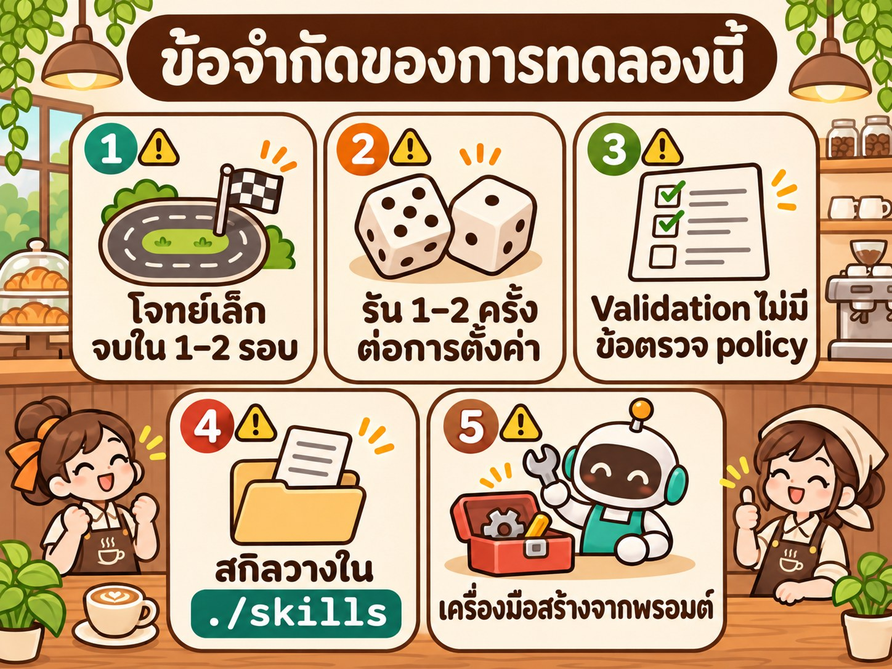
w1 w2 n1 มีส่วนที่เป็นความบังเอิญpolicy → วงรอบหยุดเมื่อ Validation ได้ 100% ทั้งที่ Training ยังไม่เต็ม./skills ไม่ได้ใส่ใน prompt แบบเปเปอร์ → Agent ต้องเปิดอ่านเอง ใช้คำสั่งเพิ่ม 1–2 ครั้งต่องานwikiskill และ prompt สร้างจากพรอมต์ของ LAB 0.1 → ฉบับของผู้เรียนอาจต่างจากฉบับที่ใช้วัดผลในบทนี้ สิ่งที่ต้องตรงคือรูปแบบใน wikiskill_format.mdถัดไป: EvoSkill v2
ให้ Agent 3 ตัวปรับสกิลกันเอง → ../07_EvoSkill_v2/README.md
รายละเอียดเต็มของบทนี้: README.md · รูปแบบของเครื่องมือ: wikiskill_format.md · ทฤษฎีต้นทาง (WikiSkill): 01_theory/README.md · สไลด์ของทฤษฎี